Photo contact sheet
499 items · 220 missing · generated 2026-10-08T00:24:05.429Z.
To replace a pick, add "item-id": "File:Name.jpg" to data/photo-overrides.json and run
npm run fetch:photos -- --only item-id.
sport 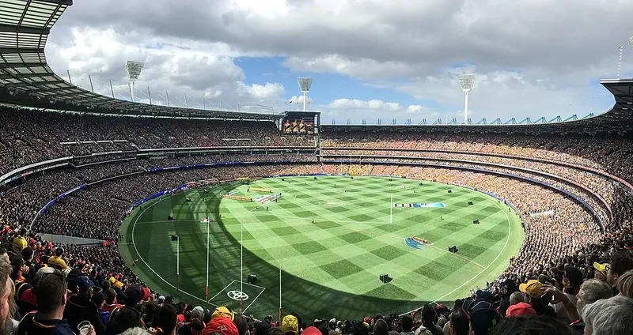
Melbourne Cricket Ground melbourne-cricket-groundMelbourne, Australia · stadium 2017 AFL Grand Final panorama during national anthem.jpg CC BY-SA 4.0 via p18 · original 7386×3918 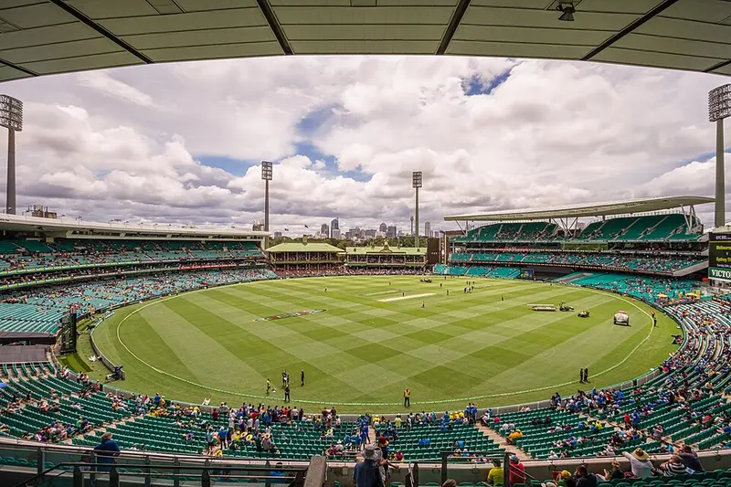
Sydney Cricket Ground sydney-cricket-groundSydney, Australia · stadium Sydney Cricket Ground (24509044622).jpg CC BY 2.0 via p18 · original 1600×1067 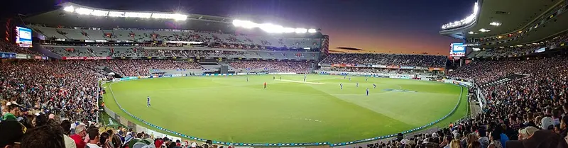
Eden Park eden-parkAuckland, New Zealand · stadium Eden Park at Dusk, 2013.jpg CC BY 2.0 via p18 · original 7347×1918 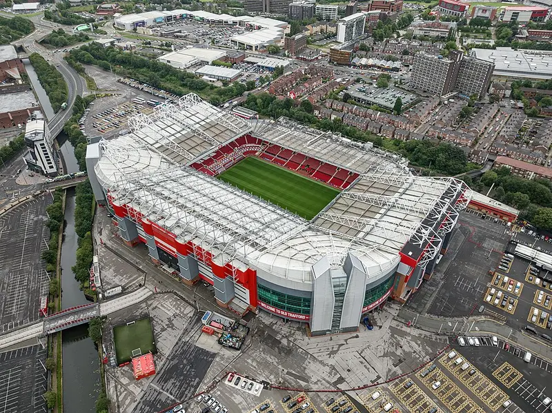
Old Trafford old-traffordManchester, England · stadium Manchester United Old Trafford.jpg CC BY-SA 3.0 via p18 · original 4995×3741 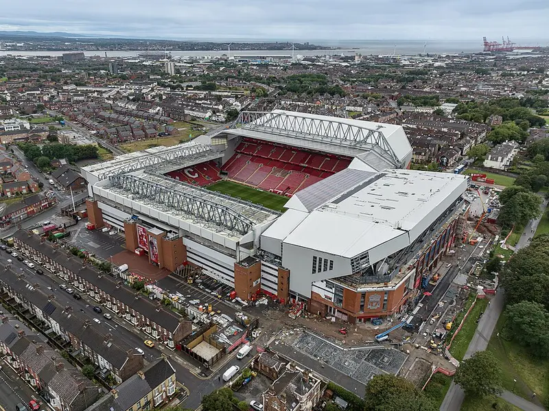
Anfield anfieldLiverpool, England · stadium Liverpool anfield road stadium.jpg CC BY-SA 3.0 via p18 · original 4595×3441 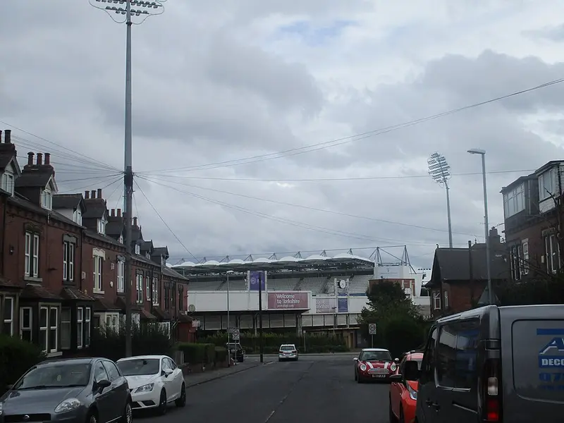
Headingley headingleyLeeds, England · stadium Headingley Stadium seen from Headingley Mount (21st August 2020).jpg CC BY-SA 4.0 via override · original 5152×3864 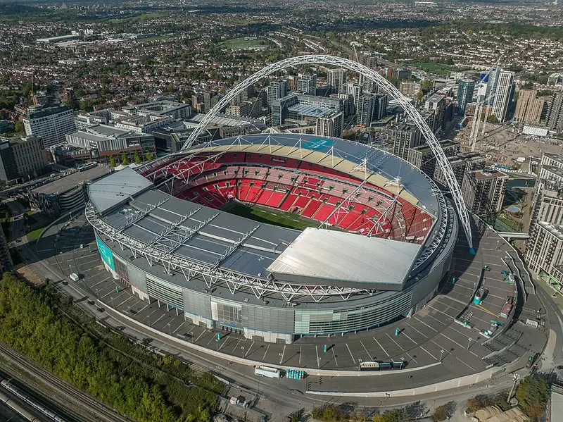
Wembley Stadium wembley-stadiumLondon, England · stadium London Wembley.jpg CC BY-SA 3.0 via p18 · original 4756×3562 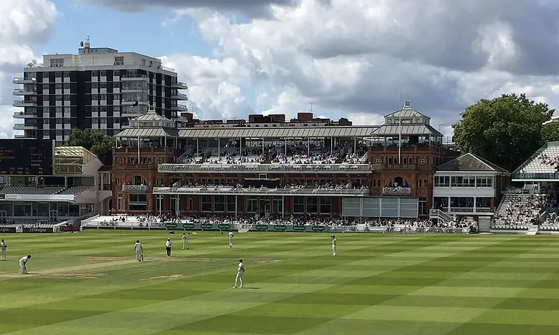
Lord's Cricket Ground lord-s-cricket-groundLondon, England · stadium Lords-Cricket-Ground-Pavilion-06-08-2017.jpg CC BY-SA 4.0 via p18 · original 1788×1073 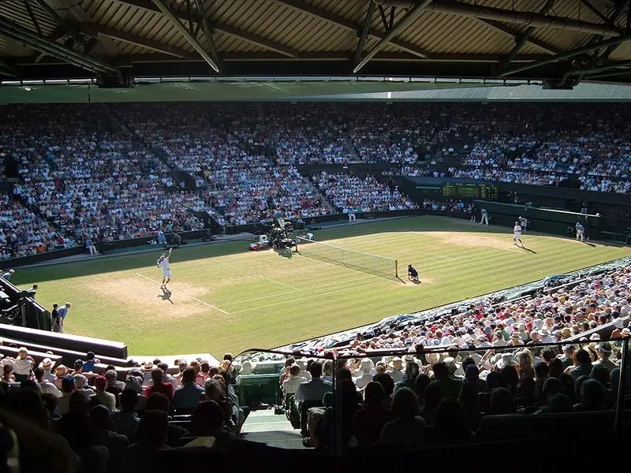
Wimbledon (All England Club) wimbledon-all-england-clubLondon, England · venue Centre court 2006.JPG Public domain via p18 · original 2016×1512 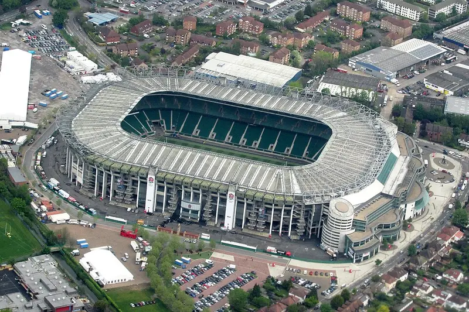
Twickenham Stadium twickenham-stadiumLondon, England · stadium Twickenham Stadium aerial view 2014.jpg CC BY-SA 2.0 via p18 · original 2987×1991 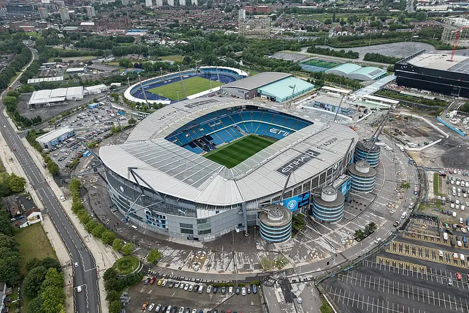
Etihad Stadium etihad-stadiumManchester, England · stadium City of Manchester Stadium 2023 cropped.jpg CC BY-SA 3.0 via p18 · original 4500×3000 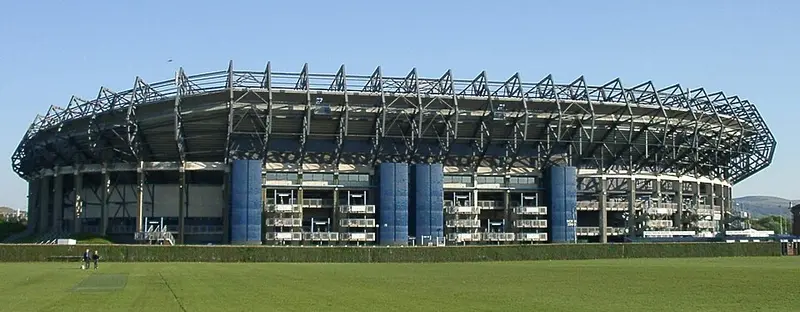
Murrayfield Stadium murrayfield-stadiumEdinburgh, Scotland · stadium Murrayfield Stadium 2005-05-13.jpg CC BY-SA 3.0 via p18 · original 1595×621 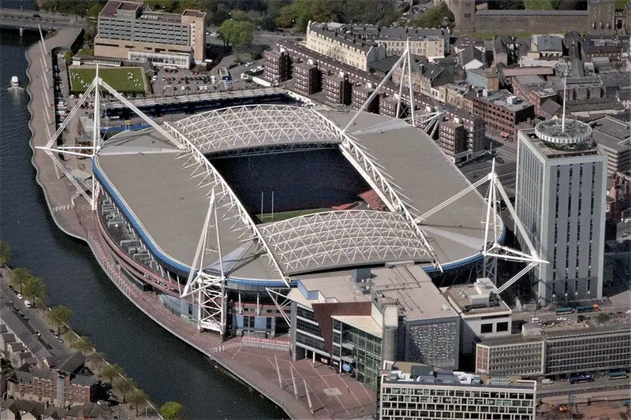
Principality Stadium principality-stadiumCardiff, Wales · stadium Principality Stadium May 3, 2016.jpg CC BY 2.0 via p18 · original 2496×1664 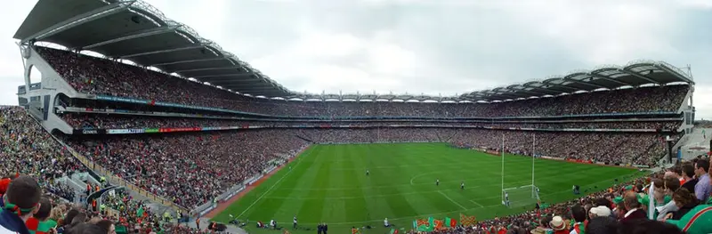
Croke Park croke-parkDublin, Ireland · stadium Croke Park from the Hill - 2004 All-Ireland Football Championship Final.jpg Public domain via p18 · original 1024×337 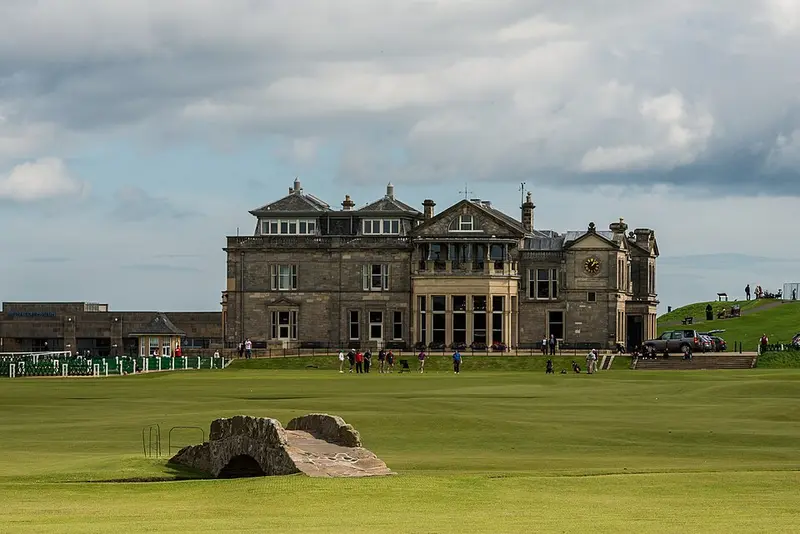
Old Course, St Andrews old-course-st-andrewsSt Andrews, Scotland · venue R&A Clubhouse, Old Course, Swilcan Burn bridge.jpg CC BY-SA 3.0 via search · original 4059×2709 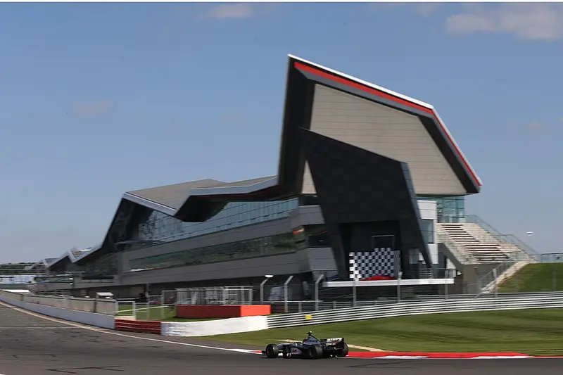
Silverstone Circuit silverstone-circuitSilverstone, England · circuit McLaren MP4-16A 2015 McLaren MP4-16A shakedown (21219267118).jpg CC BY-SA 2.0 via p18 · original 5184×3456 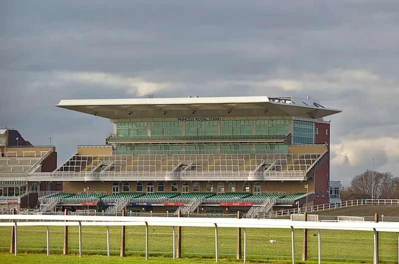
Aintree Racecourse aintree-racecourseAintree, England · venue Princess Royal Stand, Aintree Racecourse 2020.jpg CC BY-SA 4.0 via p18 · original 5177×3431 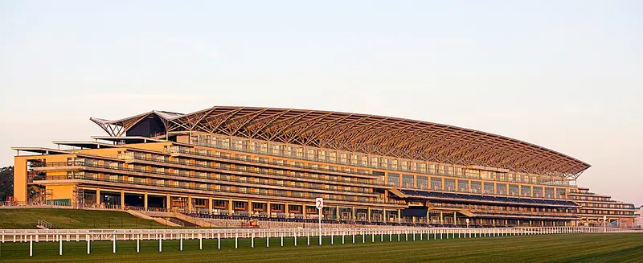
Ascot Racecourse ascot-racecourseAscot, England · venue Ascotnewstand.jpg CC BY-SA 3.0 via p18 · original 2400×979 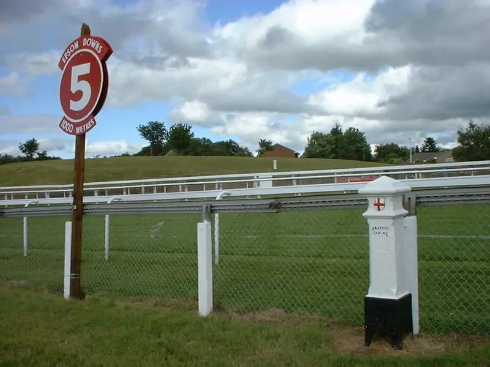
Epsom Downs Racecourse epsom-downs-racecourseEpsom, England · venue 036175 5 furlong.jpg Public domain via p18 · original 1024×768 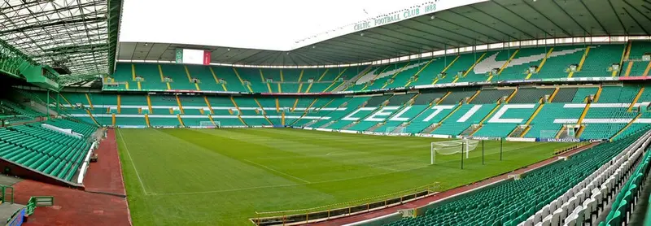
Celtic Park celtic-parkGlasgow, Scotland · stadium Celtic park 2.jpg CC BY 2.0 via p18 · original 1024×355 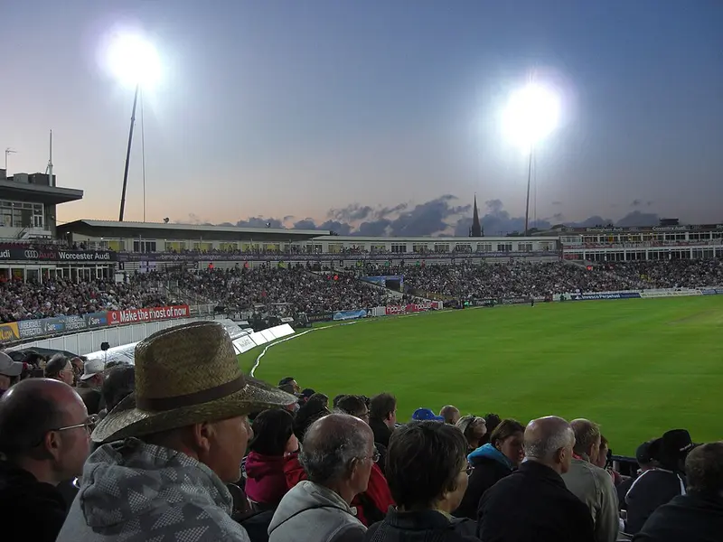
Edgbaston edgbastonBirmingham, England · stadium Edgbaston day-night.jpg CC BY 2.0 via p18 · original 3648×2736 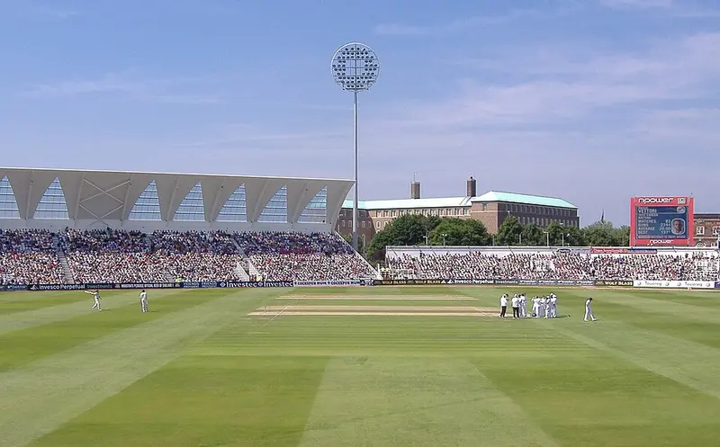
Trent Bridge trent-bridgeNottingham, England · stadium Trent Bridge MMB 01 England vs New Zealand.jpg CC BY-SA 3.0 via p18 · original 2085×1295 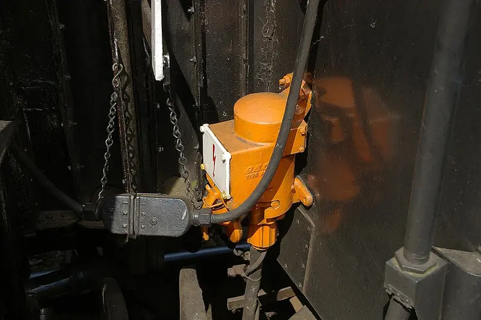
Cheltenham Racecourse cheltenham-racecourseCheltenham, England · venue Cheltenham Racecourse railway station MMB 04.jpg CC BY-SA 3.0 via search · original 2400×1600 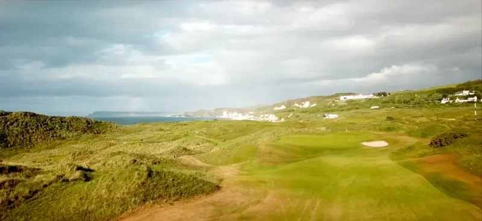
Royal Portrush Golf Club royal-portrush-golf-clubPortrush, Northern Ireland · venue Royal Portrush 8th hole.png CC BY 4.0 via p18 · original 2556×1178 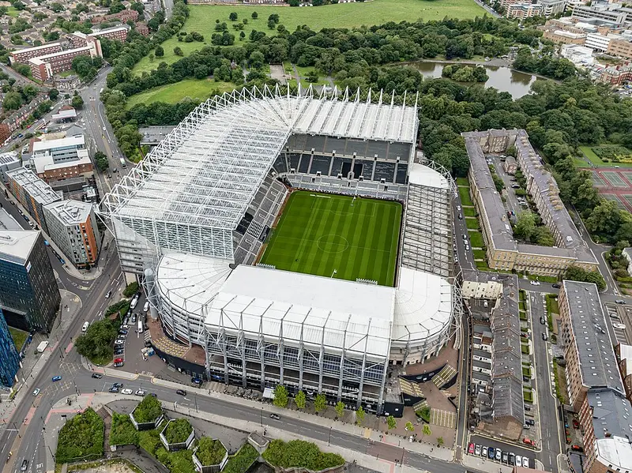
St James’ Park st-james-parkNewcastle upon Tyne, England · stadium Newcastle st-james-park stadium.jpg CC BY-SA 3.0 via p18 · original 4306×3225 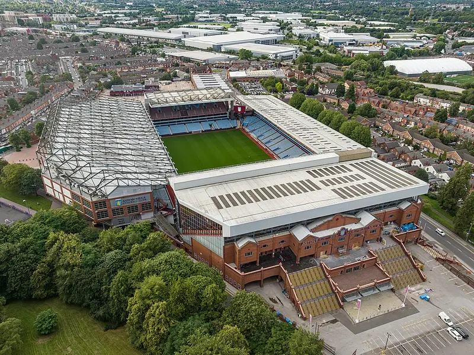
Villa Park villa-parkBirmingham, England · stadium Birmingham aston villa park stadium.jpg CC BY-SA 3.0 via p18 · original 4631×3468 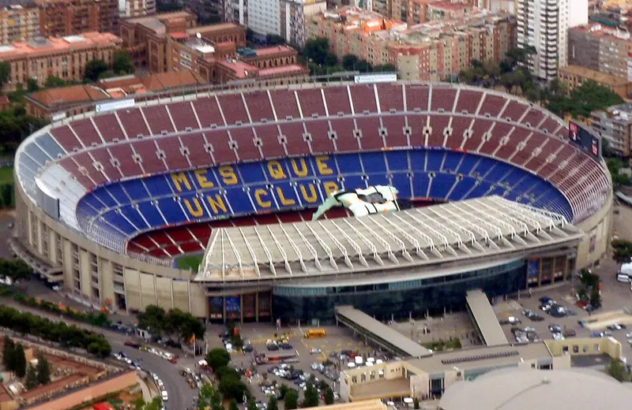
Camp Nou camp-nouBarcelona, Spain · stadium Camp Nou aerial (cropped).jpg CC BY 2.0 via p18 · original 1826×1186 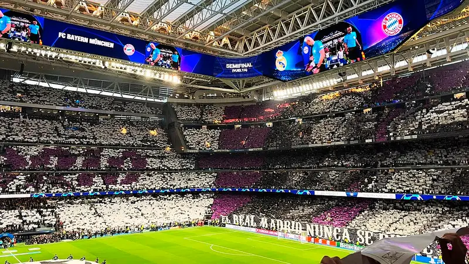
Bernabéu bernabeuMadrid, Spain · stadium Estadio Santiago Bernabéu Madrid.jpg CC BY 4.0 via p18 · original 1920×1080 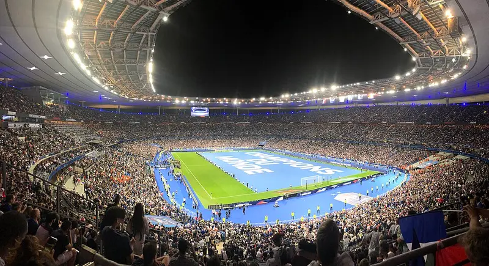
Stade de France stade-de-franceSaint-Denis, France · stadium StadeFranceNationsLeague2018.jpg CC BY-SA 4.0 via p18 · original 7156×3894 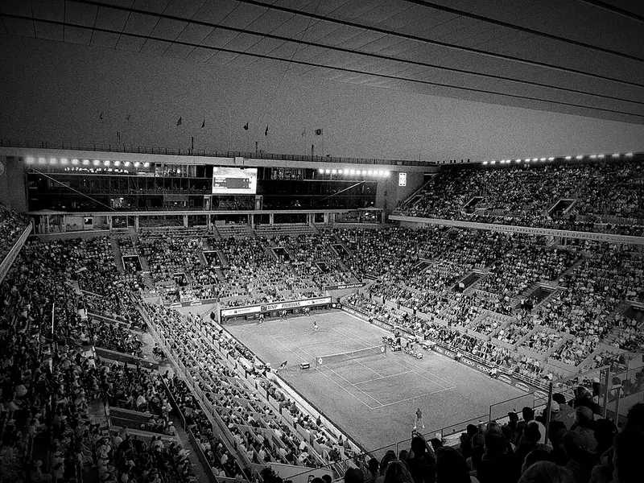
Stade Roland Garros stade-roland-garrosParis, France · venue Stade Roland Garros, Paris (Ank Kumar) 05.jpg CC BY-SA 4.0 via search · original 6000×4000 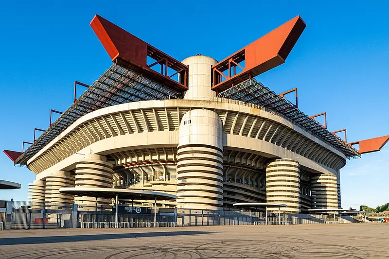
Giuseppe Meazza Stadium giuseppe-meazza-stadiumMilan, Italy · stadium Stadio Meazza 2021 3.jpg CC BY-SA 4.0 via p18 · original 4728×3152 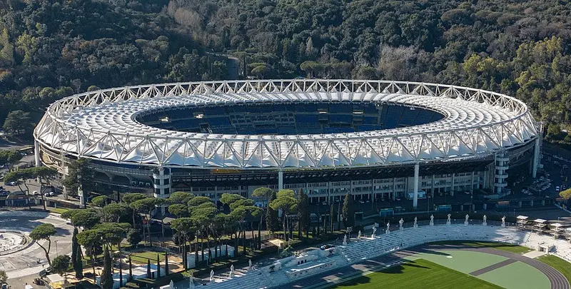
Stadio Olimpico stadio-olimpicoRome, Italy · stadium Stadio Olimpico 2024.jpg CC BY-SA 4.0 via p18 · original 3384×1712 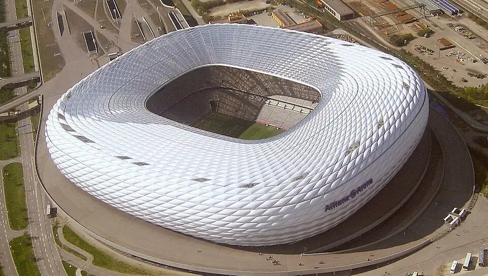
Allianz Arena allianz-arenaMunich, Germany · stadium München - Allianz-Arena (Luftbild).jpg CC BY-SA 2.5 via p18 · original 1484×840 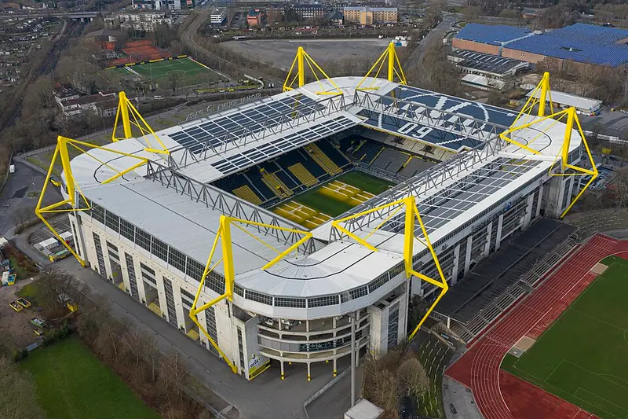
Signal Iduna Park signal-iduna-parkDortmund, Germany · stadium Signal iduna park stadium dortmund 6.jpg CC BY-SA 3.0 via p18 · original 4133×2755 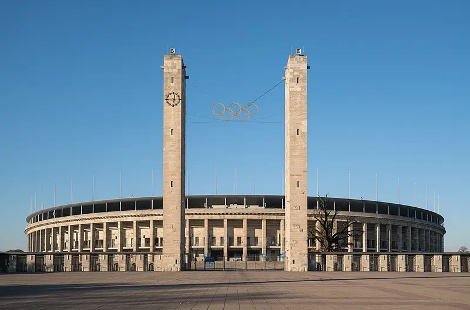
Olympiastadion Berlin olympiastadion-berlinBerlin, Germany · stadium Olympiastadion Berlin 2015.jpg CC BY-SA 3.0 via p18 · original 7020×4636 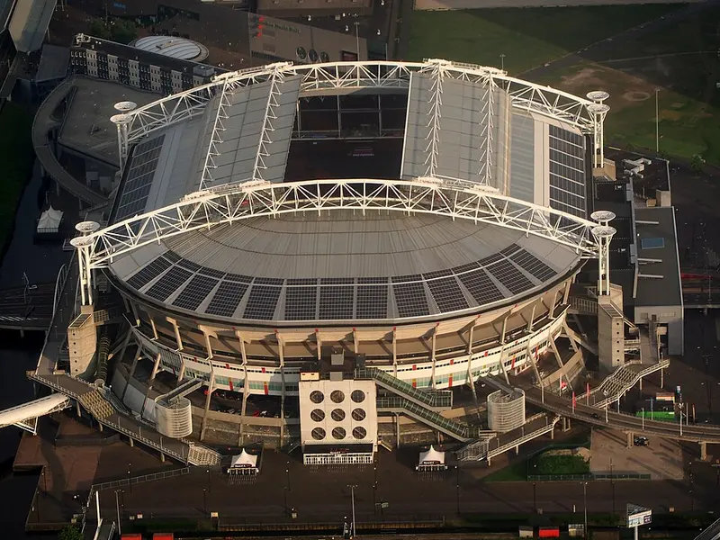
Johan Cruyff Arena johan-cruyff-arenaAmsterdam, Netherlands · stadium Arena, Ajax stadion, Amsterdam.JPG CC0 via p18 · original 4608×3456 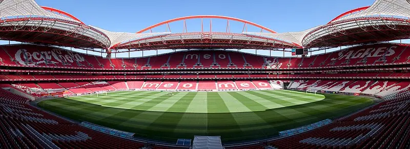
Estádio da Luz estadio-da-luzLisbon, Portugal · stadium LuzLissabon.jpg CC BY 3.0 via p18 · original 9000×3279 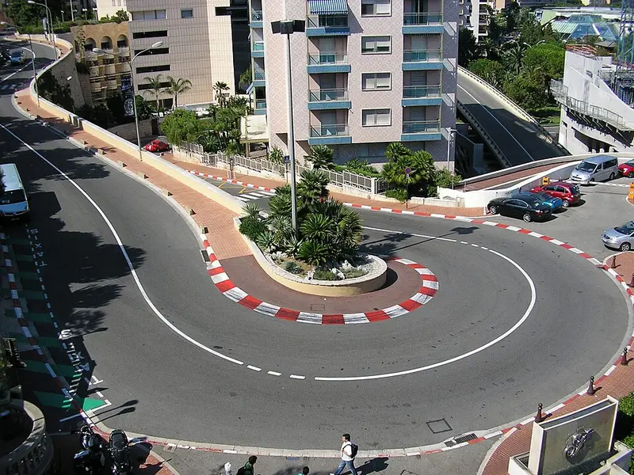
Circuit de Monaco circuit-de-monacoMonaco · circuit MONACO FORMULA 1 TURN 1 - panoramio.jpg CC BY 3.0 via p18 · original 2048×1536 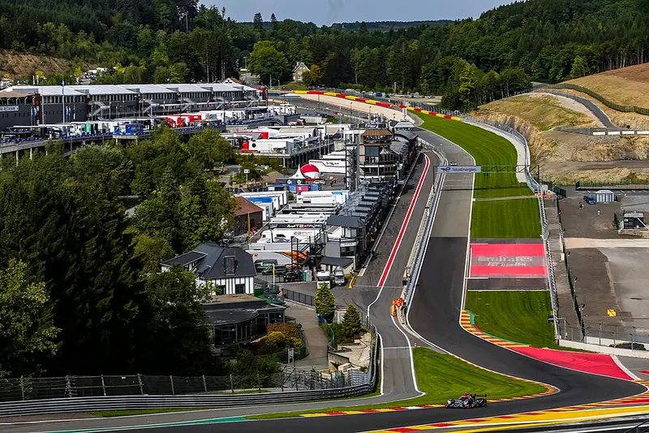
Spa-Francochamps Circuit spa-francochamps-circuitStavelot, Belgium · circuit 2022 4 Hours of Spa-Francorchamps - Circuit.jpg CC BY-SA 2.0 via p18 · original 3600×2400 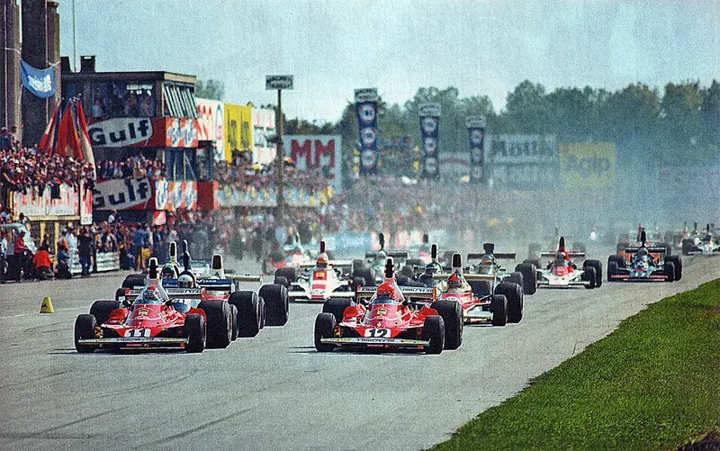
Monza monzaMonza, Italy · circuit 1975 Italian GP race start - Niki Lauda & Clay Regazzoni (Ferrari 312T).jpg Public domain via p18 · original 2234×1398 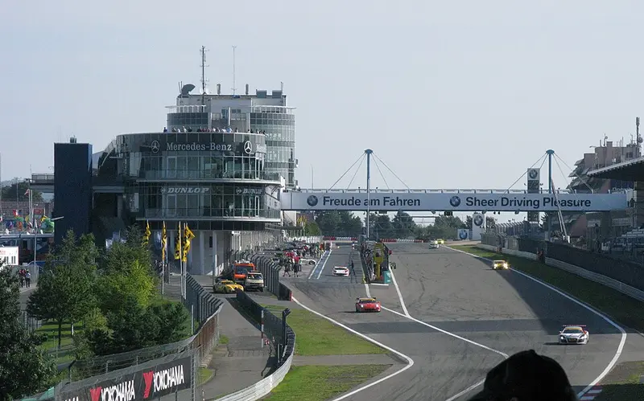
Nürburgring nurburgringNürburg, Germany · circuit ADAC GT Masters at Nuerburgring.jpg CC BY-SA 3.0 via p18 · original 2577×1608 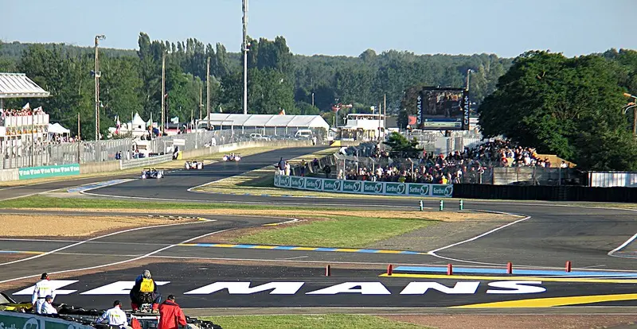
Circuit de la Sarthe circuit-de-la-sartheLe Mans, France · circuit Circuit de la Sarthe Ford Chicanes.jpg CC BY-SA 2.0 via p18 · original 2930×1518 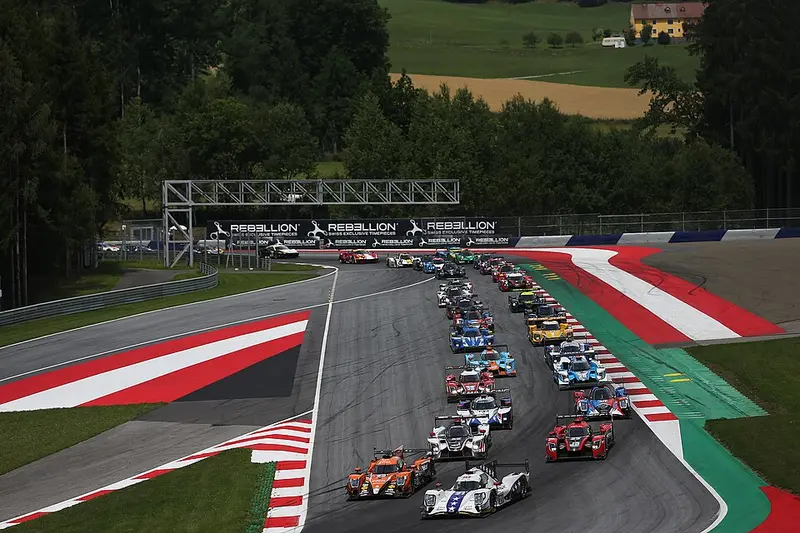
Red Bull Ring red-bull-ringSpielberg, Austria · circuit United Autosports ELMS Red Bull Ring 2017-218.jpg CC BY-SA 2.0 via p18 · original 3600×2400 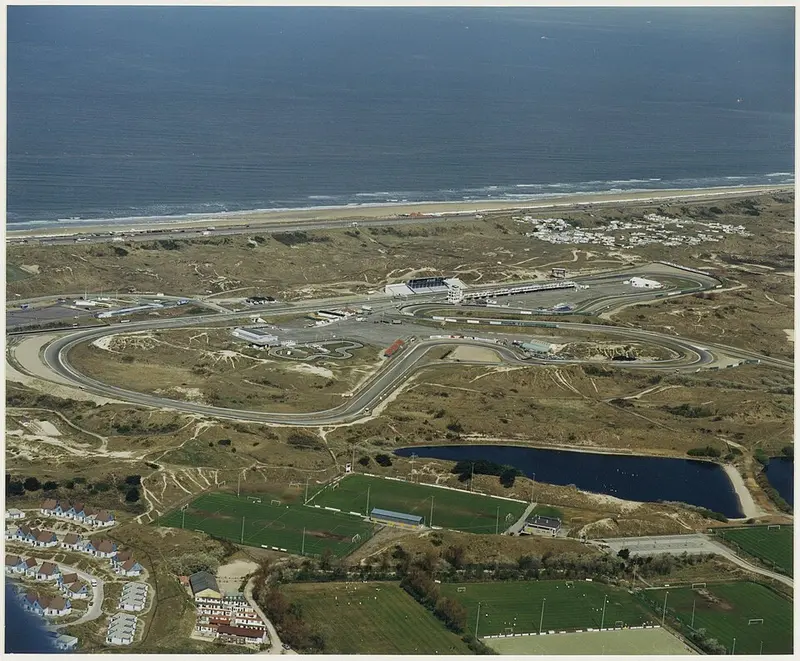
Circuit Zandvoort circuit-zandvoortZandvoort, Netherlands · circuit Circuit Zandvoort aangepast aan internationale normen. NL-HlmNHA 54036948.JPG CC0 via p18 · original 3047×2517 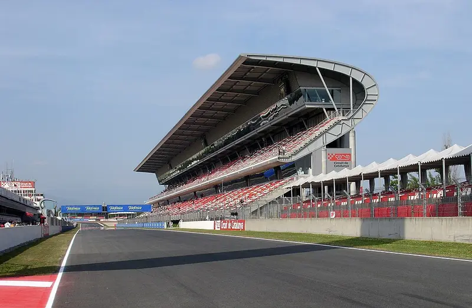
Circuit de Barcelona-Catalunya circuit-de-barcelona-catalunyaMontmeló, Spain · circuit F1 Circuit de Catalunya - Tribuna.jpg Public domain via p18 · original 1500×982 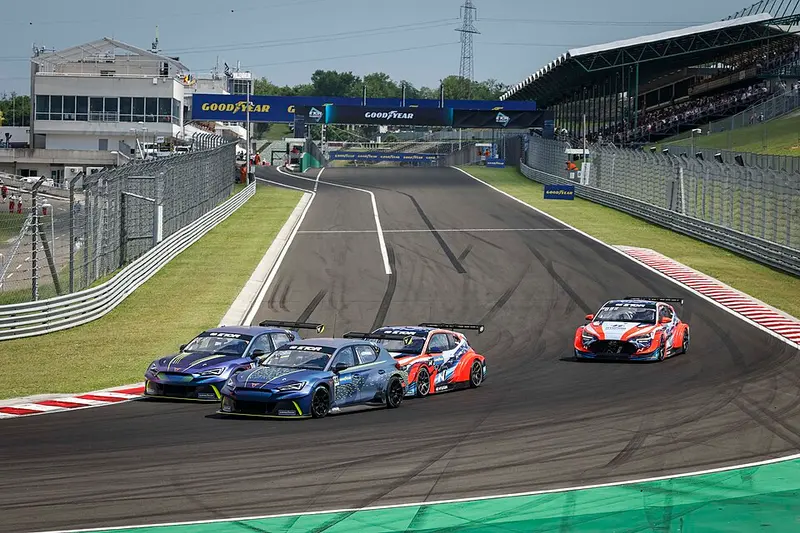
Hungaroring hungaroringMogyoród, Hungary · circuit 2022 ETCR - RD2 - Hungaroring (52186703505).jpg CC BY 2.0 via p18 · original 7116×4746 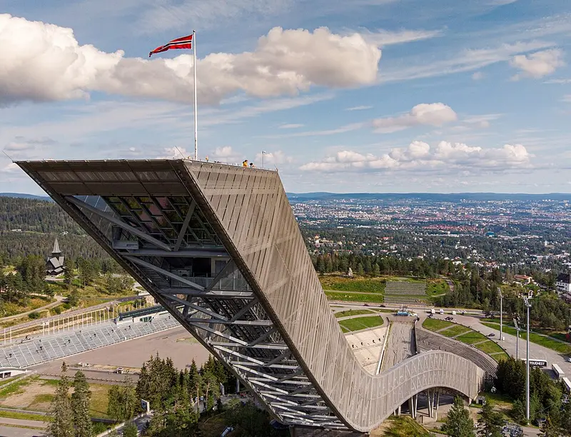
Holmenkollbakken holmenkollbakkenOslo, Norway · venue 19-08-25-Oslo Holmenkollenbakken-RalfR.jpg CC BY-SA 1.0 via p18 · original 3435×2626 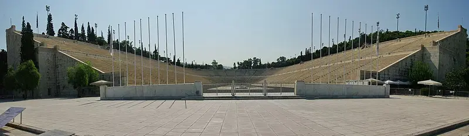
Panathenaic Stadium panathenaic-stadiumAthens, Greece · stadium GR-athen-panathinaiko-stadion.jpg CC BY-SA 3.0 via p18 · original 2259×653 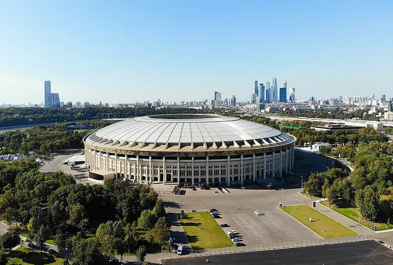
Luzhniki Stadium luzhniki-stadiumMoscow, Russia · stadium LuzhnikiStadium.jpg CC BY 4.0 via p18 · original 1600×1080 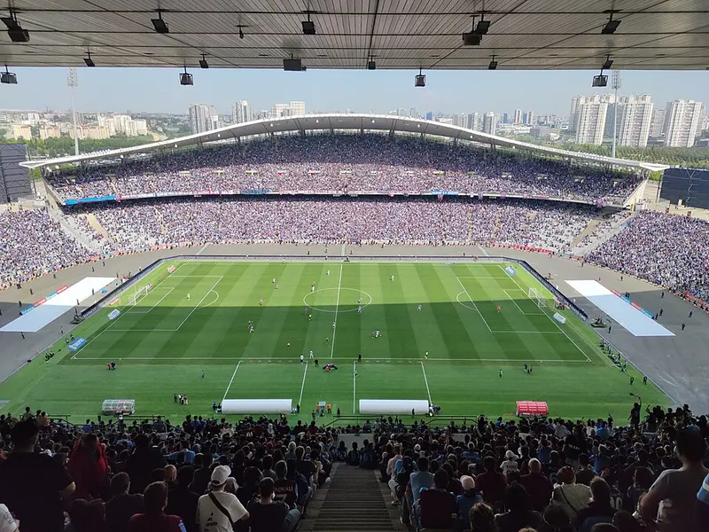
Atatürk Olympic Stadium ataturk-olympic-stadiumIstanbul, Turkey · stadium Trabzonspor vs Altay, 15.05.2022, Istanbul.jpg CC BY-SA 4.0 via p18 · original 6016×4512
Stade Vélodrome stade-velodromeMarseille, France · stadium Stade Vélodrome closeup.jpg CC BY-SA 2.0 via p18 · original 5347×3565
Imola imolaImola, Italy · circuit 2025 Emilia Romagna Grand Prix 03.jpg CC BY-SA 4.0 via p18 · original 4608×3456
Wankdorf Stadium wankdorf-stadiumBern, Switzerland · stadium Wankdorf Radweg.JPG CC BY-SA 3.0 via search · original 3008×2000
Ernst-Happel-Stadion ernst-happel-stadionVienna, Austria · stadium Euro 2008 ernst happel stadium vienna 2.jpg CC BY-SA 3.0 via p18 · original 3638×1262
Parken Stadium parken-stadiumCopenhagen, Denmark · stadium Denmark copenhagen parken stadium.jpg CC BY-SA 3.0 via p18 · original 6782×5079
Madison Square Garden madison-square-gardenNew York, United States · venue Madison Square Garden (MSG) - Full (48124330357).jpg CC BY 2.0 via p18 · original 5411×3044
Yankee Stadium yankee-stadiumNew York, United States · stadium Yankee Stadium upper deck 2010.jpg CC BY-SA 2.0 via p18 · original 2154×1616
Fenway Park fenway-parkBoston, United States · stadium View of Fenway Park from the press box in July 2022.jpg CC BY-SA 4.0 via p18 · original 4032×3024
Wrigley Field wrigley-fieldChicago, United States · stadium Wrigley Field 2018 - 42195054760.jpg CC BY 2.0 via p18 · original 7607×3500
Augusta National Golf Club augusta-national-golf-clubAugusta, United States · venue AGNC-11.jpg CC BY-SA 3.0 via p18 · original 2592×1944
Indianapolis Motor Speedway indianapolis-motor-speedwaySpeedway, United States · circuit 2007 Indianapolis 500 - Starting field formation before start.jpg CC BY-SA 3.0 via p18 · original 1206×729
Daytona International Speedway daytona-international-speedwayDaytona Beach, United States · circuit Tony Stewart leads (2273713559).jpg CC BY 2.0 via p18 · original 3008×2000
Churchill Downs churchill-downsLouisville, United States · venue 2017 Kentucky Derby IMG 20170506 113051 (34113844740).jpg CC BY 2.0 via p18 · original 4640×2610
Rose Bowl rose-bowlPasadena, United States · stadium 2018.06.17 Over the Rose Bowl, Pasadena, CA USA 0039 (42855669451) (cropped).jpg CC BY-SA 2.0 via p18 · original 2566×1613
Dodger Stadium dodger-stadiumLos Angeles, United States · stadium Dodger Stadium.jpg CC BY-SA 2.0 via p18 · original 2288×1712
Lambeau Field lambeau-fieldGreen Bay, United States · stadium Lambeau Field.jpg CC BY-SA 3.0 via p18 · original 3968×2232
Pebble Beach Golf Links pebble-beach-golf-linksPebble Beach, United States · venue Pebble Beach Golf Links, 18th green.jpg CC BY-SA 4.0 via search · original 3264×2448
Circuit of the Americas circuit-of-the-americasAustin, United States · circuit Circuit of the americas cota (52781066233).jpg CC BY 2.0 via p18 · original 5184×3456
Arrowhead Stadium arrowhead-stadiumKansas City, United States · stadium Aerial view of Arrowhead Stadium 08-31-2013.jpg CC BY-SA 3.0 via p18 · original 4928×3264
Lincoln Financial Field lincoln-financial-fieldPhiladelphia, United States · stadium Philly (45).JPG CC BY-SA 3.0 via p18 · original 2048×1536
Bell Centre bell-centreMontreal, Canada · venue Centre Bell @ Montréal (30423749922).jpg CC BY 2.0 via search · original 5472×3648
Rogers Centre rogers-centreToronto, Canada · stadium Rogers Centre.jpg CC BY-SA 4.0 via p18 · original 6000×4000
Maracanã Stadium maracana-stadiumRio de Janeiro, Brazil · stadium Maracana 2022.jpg CC BY-SA 3.0 via p18 · original 6432×4290
Estadio Azteca estadio-aztecaMexico City, Mexico · stadium Vista aérea del Estadio Azteca - 2026 - 02.jpg CC BY 4.0 via p18 · original 8064×4536
La Bombonera la-bomboneraBuenos Aires, Argentina · stadium La Bombonera 2.jpg CC BY-SA 4.0 via p18 · original 4000×3000
Interlagos interlagosSão Paulo, Brazil · circuit Autódromo de Interlagos em Dezembro de 2023.jpg CC BY-SA 4.0 via p18 · original 3060×2519
Estadio Centenario estadio-centenarioMontevideo, Uruguay · stadium Estadio Centenario (vista aérea).jpg CC BY-SA 2.0 via p18 · original 2560×1438
Kensington Oval kensington-ovalBridgetown, Barbados · stadium Kensington Oval yes.jpg CC BY 2.0 via p18 · original 800×600
Sabina Park sabina-parkKingston, Jamaica · stadium Sabina Park.jpg CC0 via p18 · original 1200×803
Estadio Nacional estadio-nacionalSantiago, Chile · stadium Estadio Nacional - A741105.jpg CC BY-SA 4.0 via p18 · original 6167×3619
Estadio Nacional del Perú estadio-nacional-del-peruLima, Peru · stadium Vista aérea del estadio nacional del Perú (2021).jpg CC BY 2.0 via p18 · original 5163×3442
FNB Stadium fnb-stadiumJohannesburg, South Africa · stadium FIFA World Cup 2010 Argentina South Korea.jpg CC BY 2.0 via p18 · original 1280×853
Newlands Cricket Ground newlands-cricket-groundCape Town, South Africa · stadium Newlands Cricket Ground.jpg CC BY-SA 4.0 via p18 · original 6000×4000
Moses Mabhida Stadium moses-mabhida-stadiumDurban, South Africa · stadium Moses Mabhida Stadium, Durban, KwaZulu Natal, South Africa (20519302751).jpg CC BY 2.0 via search · original 4608×3456
Cairo International Stadium cairo-international-stadiumCairo, Egypt · stadium Cairo stadium Egypt vs Senegal.jpg CC BY-SA 4.0 via p18 · original 3616×1536
Mohammed V Stadium mohammed-v-stadiumCasablanca, Morocco · stadium Mohammed V stadium.jpg CC0 via p18 · original 1686×948
Kings Park kings-parkDurban, South Africa · stadium King's Park Stadium, Durban.jpg CC BY-SA 4.0 via p18 · original 4288×2201
Kasarani Stadium kasarani-stadiumNairobi, Kenya · stadium A few minutes before the match, Kasarani, Nairobi.jpg CC BY-SA 4.0 via p18 · original 1600×1200
Rod Laver Arena rod-laver-arenaMelbourne, Australia · venue Rod Laver Arena Melbourne Park Australian Open 2023 quarter final dusk.jpg CC BY-SA 4.0 via search · original 4032×3024
Albert Park Circuit albert-park-circuitMelbourne, Australia · circuit Melbourne Grand Prix Circuit pit building.jpg CC BY-SA 2.5 via p18 · original 2592×1944
Flemington Racecourse flemington-racecourseMelbourne, Australia · venue Flemington-race-course-180-degree.jpg CC BY 3.0 via p18 · original 1930×424
Adelaide Oval adelaide-ovalAdelaide, Australia · stadium Adelaide Oval - panoramio (cropped).jpg CC BY-SA 3.0 via p18 · original 1251×782
The Gabba brisbane-cricket-groundBrisbane, Australia · stadium The Gabba Panorama.jpg CC BY 2.0 via p18 · original 2592×1944
Perth Stadium perth-stadiumPerth, Australia · stadium Perth Stadium opening 210118 gnangarra-12.jpg CC BY 2.5 via p18 · original 7360×4912
Mount Panorama Circuit mount-panorama-circuitBathurst, Australia · circuit Mount Panorama Pit Straight and Pit Lane 2015.JPG CC BY-SA 4.0 via p18 · original 3456×2304
Accor Stadium accor-stadiumSydney, Australia · stadium Australia Stadium.jpg CC BY-SA 2.5 via p18 · original 2092×1106
Sky Stadium sky-stadiumWellington, New Zealand · stadium Wellington Westpac Stadium in 2010.jpg CC BY-SA 4.0 via p18 · original 2700×1800
Bellerive Oval bellerive-ovalHobart, Australia · stadium One-day Cricket Australia vs England, Bellerive Oval, January 2011 (2).jpg CC BY-SA 2.0 via search · original 4008×2672
Royal Melbourne Golf Club royal-melbourne-golf-clubMelbourne, Australia · venue Bubba Watson (6346176707).jpg CC BY 2.0 via search · original 4623×3082
Hagley Oval hagley-ovalChristchurch, New Zealand · stadium Hagley Oval, Christchurch, New Zealand.jpg CC BY-SA 4.0 via p18 · original 11120×2339
Eden Gardens eden-gardensKolkata, India · stadium Eden Garden Stadium Kolkata MB01.jpg CC BY-SA 4.0 via p18 · original 1440×896
Wankhede Stadium wankhede-stadiumMumbai, India · stadium Wankhede ICC WCF.jpg CC BY-SA 3.0 via p18 · original 2048×1536
Narendra Modi Stadium narendra-modi-stadiumAhmedabad, India · stadium Narendra Modi Stadium view from the gallery.jpg CC BY-SA 4.0 via p18 · original 3656×2039
Gaddafi Stadium gaddafi-stadiumLahore, Pakistan · stadium Gaddafi Stadium at Night.jpg CC BY-SA 4.0 via p18 · original 6796×2386
Galle International Stadium galle-international-stadiumGalle, Sri Lanka · stadium Galle International Stadium (2).jpg CC BY-SA 3.0 via p18 · original 4320×3240
Suzuka Circuit suzuka-circuitSuzuka, Japan · circuit Suzukacircuit main-straight.jpg CC BY-SA 4.0 via p18 · original 3264×1836
Tokyo Dome tokyo-domeTokyo, Japan · stadium Tokyo dome.JPG CC BY-SA 3.0 via p18 · original 1419×1107
Ryōgoku Kokugikan ryogoku-kokugikanTokyo, Japan · venue Ryogoku Great Sumo Hall.jpg CC BY-SA 2.0 via p18 · original 2272×1704
Beijing National Stadium beijing-national-stadiumBeijing, China · stadium Beijing National Stadium from the Central Axis (20220905140702).jpg CC BY-SA 4.0 via p18 · original 6800×4533
Marina Bay Street Circuit marina-bay-street-circuitSingapore · circuit Singapore (SG), Marina Bay Street Circuit, F1 Pit Building -- 2019 -- 4478.jpg CC BY-SA 4.0 via p18 · original 6720×4480
Sepang International Circuit sepang-international-circuitSepang, Malaysia · circuit Sepang tribune.jpg Public domain via p18 · original 3072×2048
Shanghai International Circuit shanghai-international-circuitShanghai, China · circuit Shanghai International Circuit, April 7, 2018 SkySat.jpg CC BY-SA 4.0 via search · original 3454×2591
Lusail Stadium lusail-stadiumLusail, Qatar · stadium Brésil vs Serbie.jpg CC BY-SA 4.0 via p18 · original 2048×922
Yas Marina Circuit yas-marina-circuitAbu Dhabi, United Arab Emirates · circuit YasMarina1.jpeg CC BY-SA 3.0 via p18 · original 2592×1458
Bahrain International Circuit bahrain-international-circuitSakhir, Bahrain · circuit 2012 Bahrain Grand Prix 2.jpg CC BY 2.0 via p18 · original 1000×665
Seoul Olympic Main Stadium seoul-olympic-main-stadiumSeoul, South Korea · stadium Seoul Olympic Stadium in 1994.jpg CC BY-SA 2.0 via search · original 1600×1067
Gelora Bung Karno Stadium gelora-bung-karno-stadiumJakarta, Indonesia · stadium Gelora Bung Karno Main Stadium interior.jpg CC BY-SA 4.0 via search · original 5760×1376
Koshien Stadium koshien-stadiumNishinomiya, Japan · stadium Summer Koshien 2009 Final.jpg CC BY-SA 3.0 via p18 · original 1775×750
Rajiv Gandhi International Cricket Stadium rajiv-gandhi-international-cricket-stadiumHyderabad, India · stadium Uppal stadium Rajiv Gandhi International Cricket Stadium.jpg CC BY-SA 4.0 via p18 · original 4032×3024
M. Chinnaswamy Stadium m-chinnaswamy-stadiumBengaluru, India · stadium Chinnaswamy Stadium during India vs New Zealand Test Match,October 2024 2.jpg CC0 via p18 · original 4080×1884
Sharjah Cricket Stadium sharjah-cricket-association-stadiumSharjah, United Arab Emirates · stadium SharjahCricket.JPG Public domain via p18 · original 1795×1024
Jeddah Corniche Circuit jeddah-corniche-circuitJeddah, Saudi Arabia · circuit Jeddah Formula E Layout.png CC BY-SA 4.0 via search · original 5241×2076 music
Abbey Road Studios abbey-road-studiosLondon, England · studio Abbey road studios.jpg CC BY-SA 3.0 via p18 · original 1512×1134
Glastonbury Festival (Worthy Farm) glastonbury-festivalPilton, England · festival Glastonbury Tribute.jpg CC BY-SA 4.0 via p18 · original 6000×4000
Woodstock 1969 festival site woodstock-1969Bethel, New York, USA · festival BethelWoods.jpg CC BY-SA 3.0 via p18 · original 8987×1757
Sun Studio sun-studioMemphis, Tennessee, USA · studio Facade of Sun Studio - Memphis - Tennessee - USA.jpg CC BY-SA 3.0 via override · original 3648×2736
FAME Studios fame-studiosMuscle Shoals, Alabama, USA · studio FAME Recording Studios sign, Muscle Shoals, Alabama.jpg CC BY 2.0 via search · original 4287×2750
Ryman Auditorium ryman-auditoriumNashville, Tennessee, USA · venue Ryman Auditorium.jpg CC BY-SA 4.0 via search · original 3300×2200
The Beatles the-beatlesLiverpool, England · artist Liverpool Metropolitan Cathedral at dusk (reduced grain), corrected perspective.jpg CC BY 2.5 via search · original 5141×3215
Oasis oasisManchester, England · artist Manchester from the Sky, 2008.jpg CC BY 2.0 via p18 · original 5616×3744
ABBA abbaStockholm, Sweden · artist Stockholm August 2020 - Kastellet, Vasa Museum, and Nordic Museum.jpg CC BY-SA 4.0 via search · original 5264×2859
Elvis Presley elvis-presleyTupelo, Mississippi, USA · artist Downtown Tupelo 1.JPG CC BY-SA 3.0 via override · original 3264×1590
Johnny Cash johnny-cashKingsland, Arkansas, USA · artist Old US 79, Kingsland Segment.jpg CC BY-SA 4.0 via override · original 3264×4928 · portrait
Dolly Parton dolly-partonPittman Center, Tennessee, USA · artist Emertscovebridge1.jpg CC BY 2.5 via override · original 1071×841 NO PHOTO
The Cavern Club the-cavern-clubLiverpool, England · venue no credit NO PHOTO
Royal Albert Hall royal-albert-hallLondon, England · venue no credit NO PHOTO
Sydney Opera House sydney-opera-house-musicSydney, Australia · venue no credit NO PHOTO
Carnegie Hall carnegie-hallNew York, United States · venue no credit NO PHOTO
Hollywood Bowl hollywood-bowlLos Angeles, United States · venue no credit NO PHOTO
Red Rocks Amphitheatre red-rocks-amphitheatreMorrison, United States · venue no credit NO PHOTO
Apollo Theater apollo-theaterNew York, United States · venue no credit NO PHOTO
Hitsville U.S.A. (Motown) hitsville-u-s-a-motownDetroit, United States · studio no credit NO PHOTO
Electric Lady Studios electric-lady-studiosNew York, United States · studio no credit NO PHOTO
Capitol Records Building capitol-records-buildingLos Angeles, United States · studio no credit NO PHOTO
Whisky a Go Go whisky-a-go-goLos Angeles, United States · venue no credit NO PHOTO
CBGB cbgbNew York, United States · venue no credit NO PHOTO
Muscle Shoals Sound Studio muscle-shoals-sound-studioSheffield, United States · studio no credit NO PHOTO
Hansa Tonstudio hansa-tonstudioBerlin, Germany · studio no credit NO PHOTO
L'Olympia l-olympiaParis, France · venue no credit NO PHOTO
Musikverein musikvereinVienna, Austria · venue no credit NO PHOTO
Vienna State Opera house vienna-state-opera-houseVienna, Austria · venue no credit NO PHOTO
La Scala la-scalaMilan, Italy · venue no credit NO PHOTO
Bayreuth Festival Theatre bayreuth-festival-theatreBayreuth, Germany · venue no credit NO PHOTO
Elbphilharmonie elbphilharmonieHamburg, Germany · venue no credit NO PHOTO
Paradiso paradisoAmsterdam, Netherlands · venue no credit NO PHOTO
Roskilde Festival roskilde-festivalRoskilde, Denmark · festival no credit NO PHOTO
Wacken Open Air wacken-open-airWacken, Germany · festival no credit NO PHOTO
Tomorrowland tomorrowlandBoom, Belgium · festival no credit NO PHOTO
Montreux Jazz Festival montreux-jazz-festivalMontreux, Switzerland · festival no credit NO PHOTO
Coachella coachellaIndio, United States · festival no credit NO PHOTO
Isle of Wight Festival isle-of-wight-festivalNewport, England · festival no credit NO PHOTO
Sziget Festival sziget-festivalBudapest, Hungary · festival no credit NO PHOTO
Exit Festival exit-festivalNovi Sad, Serbia · festival no credit NO PHOTO
Bolshoi Theatre bolshoi-theatreMoscow, Russia · venue no credit NO PHOTO
Colón Theater colon-theaterBuenos Aires, Argentina · venue no credit NO PHOTO
Nippon Budōkan nippon-budokanTokyo, Japan · venue no credit NO PHOTO
Massey Hall massey-hallToronto, Canada · venue no credit NO PHOTO
Preservation Hall preservation-hallNew Orleans, United States · venue no credit NO PHOTO
The Fillmore the-fillmoreSan Francisco, United States · venue no credit NO PHOTO
Ronnie Scott's ronnie-scott-sLondon, England · venue no credit NO PHOTO
Palais Garnier palais-garnierParis, France · venue no credit NO PHOTO
Gewandhaus gewandhausLeipzig, Germany · venue no credit NO PHOTO
Rudolfinum rudolfinumPrague, Czech Republic · venue no credit NO PHOTO
Rockfield Studios rockfield-studiosMonmouth, Wales · studio no credit NO PHOTO
Compass Point Studios compass-point-studiosNassau, Bahamas · studio no credit NO PHOTO
Tuff Gong (Bob Marley Museum) tuff-gong-bob-marley-museumKingston, Jamaica · studio no credit NO PHOTO
New Afrika Shrine new-afrika-shrineLagos, Nigeria · venue no credit NO PHOTO
Fuji Rock Festival fuji-rock-festivalYuzawa, Japan · festival no credit NO PHOTO
The Rolling Stones the-rolling-stonesLondon, England · artist no credit NO PHOTO
Queen queenLondon, England · artist no credit NO PHOTO
U2 u2Dublin, Ireland · artist no credit NO PHOTO
AC/DC ac-dcSydney, Australia · artist no credit NO PHOTO
INXS inxsSydney, Australia · artist no credit NO PHOTO
Nirvana nirvanaAberdeen, United States · artist no credit NO PHOTO
Pearl Jam pearl-jamSeattle, United States · artist no credit NO PHOTO
Metallica metallicaLos Angeles, United States · artist no credit NO PHOTO
The Beach Boys the-beach-boysHawthorne, United States · artist no credit NO PHOTO
Kraftwerk kraftwerkDüsseldorf, Germany · artist no credit NO PHOTO
Rammstein rammsteinBerlin, Germany · artist no credit NO PHOTO
Daft Punk daft-punkParis, France · artist no credit NO PHOTO
Radiohead radioheadAbingdon, England · artist no credit NO PHOTO
Arctic Monkeys arctic-monkeysSheffield, England · artist no credit NO PHOTO
The Smiths the-smithsManchester, England · artist no credit NO PHOTO
Black Sabbath black-sabbathBirmingham, England · artist no credit NO PHOTO
Crowded House crowded-houseMelbourne, Australia · artist no credit NO PHOTO
BTS btsSeoul, South Korea · artist no credit NO PHOTO
Sigur Rós sigur-rosReykjavík, Iceland · artist no credit NO PHOTO
The Cranberries the-cranberriesLimerick, Ireland · artist no credit NO PHOTO
Simple Minds simple-mindsGlasgow, Scotland · artist no credit NO PHOTO
a-ha a-haOslo, Norway · artist no credit NO PHOTO
Roxette roxetteHalmstad, Sweden · artist no credit NO PHOTO
Scorpions scorpionsHanover, Germany · artist no credit NO PHOTO
The Doors the-doorsLos Angeles, United States · artist no credit NO PHOTO
Grateful Dead grateful-deadPalo Alto, United States · artist no credit NO PHOTO
Talking Heads talking-headsNew York, United States · artist no credit NO PHOTO
Gipsy Kings gipsy-kingsArles, France · artist no credit NO PHOTO
Ladysmith Black Mambazo ladysmith-black-mambazoLadysmith, South Africa · artist no credit NO PHOTO
Midnight Oil midnight-oilSydney, Australia · artist no credit NO PHOTO
Led Zeppelin led-zeppelinLondon, England · artist no credit NO PHOTO
Bob Marley bob-marleyNine Mile, Jamaica · artist no credit NO PHOTO
Frank Sinatra frank-sinatraHoboken, United States · artist no credit NO PHOTO
Louis Armstrong louis-armstrongNew Orleans, United States · artist no credit NO PHOTO
Aretha Franklin aretha-franklinMemphis, United States · artist no credit NO PHOTO
Jimi Hendrix jimi-hendrixSeattle, United States · artist no credit NO PHOTO
Bob Dylan bob-dylanDuluth, United States · artist no credit NO PHOTO
Prince princeMinneapolis, United States · artist no credit NO PHOTO
Madonna madonnaBay City, United States · artist no credit NO PHOTO
Beyoncé beyonceHouston, United States · artist no credit NO PHOTO
Kylie Minogue kylie-minogueMelbourne, Australia · artist no credit NO PHOTO
Björk bjorkReykjavík, Iceland · artist no credit NO PHOTO
Édith Piaf edith-piafParis, France · artist no credit NO PHOTO
Wolfgang Amadeus Mozart wolfgang-amadeus-mozartSalzburg, Austria · artist no credit NO PHOTO
Ludwig van Beethoven ludwig-van-beethovenBonn, Germany · artist no credit NO PHOTO
Frédéric Chopin frederic-chopinŻelazowa Wola, Poland · artist no credit NO PHOTO
Johann Sebastian Bach johann-sebastian-bachEisenach, Germany · artist no credit NO PHOTO
Pyotr Ilyich Tchaikovsky pyotr-ilyich-tchaikovskyVotkinsk, Russia · artist no credit NO PHOTO
Antonio Vivaldi antonio-vivaldiVenice, Italy · artist no credit NO PHOTO
Giuseppe Verdi giuseppe-verdiBusseto, Italy · artist no credit NO PHOTO
Fela Kuti fela-kutiAbeokuta, Nigeria · artist no credit NO PHOTO
Youssou N’Dour youssou-n-dourDakar, Senegal · artist no credit NO PHOTO
Umm Kulthum umm-kulthumTamay ez-Zahayra, Egypt · artist no credit NO PHOTO
Shakira shakiraBarranquilla, Colombia · artist no credit NO PHOTO
Freddie Mercury freddie-mercuryZanzibar City, Tanzania · artist no credit NO PHOTO
Elton John elton-johnPinner, England · artist no credit NO PHOTO
Céline Dion celine-dionCharlemagne, Canada · artist no credit NO PHOTO
Drake drakeToronto, Canada · artist no credit NO PHOTO
Rihanna rihannaSaint Michael, Barbados · artist no credit NO PHOTO
Ravi Shankar ravi-shankarVaranasi, India · artist no credit NO PHOTO
A. R. Rahman a-r-rahmanChennai, India · artist no credit NO PHOTO
Lata Mangeshkar lata-mangeshkarIndore, India · artist no credit NO PHOTO
Buddy Holly buddy-hollyLubbock, United States · artist no credit NO PHOTO
Willie Nelson willie-nelsonAbbott, United States · artist no credit NO PHOTO
Ray Charles ray-charlesAlbany, United States · artist no credit NO PHOTO
Slim Dusty slim-dustyKempsey, Australia · artist no credit NO PHOTO
Joni Mitchell joni-mitchellFort Macleod, Canada · artist no credit NO PHOTO
Leonard Cohen leonard-cohenMontreal, Canada · artist no credit NO PHOTO
Jacques Brel jacques-brelBrussels, Belgium · artist no credit NO PHOTO
Luciano Pavarotti luciano-pavarottiModena, Italy · artist no credit NO PHOTO
Andrea Bocelli andrea-bocelliLajatico, Italy · artist no credit NO PHOTO
Nana Mouskouri nana-mouskouriChania, Greece · artist no credit NO PHOTO
Johnny Hallyday johnny-hallydayParis, France · artist no credit NO PHOTO
Miriam Makeba miriam-makebaJohannesburg, South Africa · artist no credit NO PHOTO
Cesária Évora cesaria-evoraMindelo, Cape Verde · artist no credit NO PHOTO
Michael Jackson michael-jacksonGary, United States · artist no credit NO PHOTO
Taylor Swift taylor-swiftWest Reading, United States · artist no credit NO PHOTO
Antônio Carlos Jobim antonio-carlos-jobimRio de Janeiro, Brazil · artist no credit NO PHOTO
Soda Stereo soda-stereoBuenos Aires, Argentina · artist no credit NO PHOTO
Ed Sheeran ed-sheeranHalifax, England · artist no credit NO PHOTO
Stax Records studio (Soulsville) stax-records-studio-soulsvilleMemphis, United States · studio no credit geography
Statue of Liberty statue-of-libertyNew York, United States · landmark Statue of Liberty and a sightseeing boat, Liberty Island, New York.jpg CC BY-SA 4.0 via p18 · original 7728×5152
Washington, D.C. washington-dcUnited States · capital Aerial view of White House and downtown, Washington, D.C LCCN2010630891.jpg Public domain via p18 · original 6147×3248
Christ the Redeemer christ-the-redeemerRio de Janeiro, Brazil · landmark Unique Moment with the Moon and Christ the Redeemer 3.jpg CC BY-SA 4.0 via search · original 3450×2300
Big Ben big-benLondon, United Kingdom · landmark Big Ben at sunset - 2014-10-27 17-30.jpg CC BY-SA 4.0 via search · original 5575×3774
Eiffel Tower eiffel-towerParis, France · landmark Paris - The Eiffel Tower in spring - 2307.jpg CC BY-SA 3.0 via search · original 4368×2912
Dublin dublinIreland · capital Dublin - aerial - 2025-07-07 01.jpg CC BY-SA 4.0 via p18 · original 4032×2268
Great Barrier Reef great-barrier-reefQueensland, Australia · landmark Aerial View of Great Barrier Reef (Ank Kumar) 01.jpg CC BY-SA 4.0 via override · original 6000×4000
Sydney Opera House sydney-opera-houseSydney, Australia · landmark Sydney Opera House Sails.jpg CC BY-SA 3.0 via p18 · original 2125×1405
Sydney Harbour Bridge sydney-harbour-bridgeSydney, Australia · landmark SydneyHarbourBridge1 gobeirne.jpg CC BY 2.5 via p18 · original 2958×1635
Uluru uluruNorthern Territory, Australia · landmark Sunset at Uluru on July 30, 2005.jpg CC BY-SA 3.0 via p18 · original 1561×1171
Sky Tower sky-towerAuckland, New Zealand · landmark View from Sky Tower Akl.jpg CC BY-SA 3.0 via search · original 4996×1300
Moai at Ahu Tongariki moai-at-ahu-tongarikiEaster Island, Chile · landmark Easter Island Ahu (2006).jpg CC BY 2.5 via p18 · original 3072×2304
Taj Mahal taj-mahalAgra, India · landmark Taj Mahal, Agra, India edit3.jpg CC BY-SA 3.0 via p18 · original 3144×2173
Gateway of India gateway-of-indiaMumbai, India · landmark Panoramic view of Taj Palace Hotel and Taj Tower with the iconic Gateway of India in the background.jpg CC BY-SA 4.0 via search · original 5515×3102
Golden Temple golden-templeAmritsar, India · landmark Hamandir Sahib (Golden Temple).jpg CC BY-SA 3.0 via p18 · original 5184×3456
Qutb Minar qutb-minarDelhi, India · landmark A Potrait view of Qutub Minar.jpg CC BY-SA 4.0 via p18 · original 3264×2448
Great Wall of China (Badaling) great-wall-of-china-badalingBadaling, China · landmark The Great Wall of China at Jinshanling-edit.jpg CC BY-SA 3.0 via p18 · original 4288×2848
Forbidden City forbidden-cityBeijing, China · landmark Hall of Supreme Harmony (20241127120000).jpg CC BY-SA 4.0 via p18 · original 7190×4793
Terracotta Army terracotta-armyXi'an, China · landmark 51714-Terracota-Army.jpg CC BY 2.0 via p18 · original 3000×1987
Potala Palace potala-palaceLhasa, China · landmark Potala.jpg CC BY 2.5 via p18 · original 2592×1728
The Bund the-bundShanghai, China · landmark Promenade du Bund.jpg CC BY-SA 3.0 via p18 · original 1748×1162
Mount Fuji mount-fujiHonshu, Japan · landmark Kodaki fuji frm shojinko refurb.jpg CC BY-SA 3.0 via p18 · original 4000×2677
Tokyo Tower tokyo-towerTokyo, Japan · landmark Tokyo Tower, Minato City.jpg CC BY 4.0 via search · original 5991×3370
Fushimi Inari-taisha fushimi-inari-taishaKyoto, Japan · landmark Fushimiinari-taisha, naihaiden-1.jpg CC0 via p18 · original 6002×3978
Itsukushima Shrine itsukushima-shrineHatsukaichi, Japan · landmark Itsukushima Gate.jpg CC BY-SA 3.0 via p18 · original 4200×2803
Gyeongbokgung gyeongbokgungSeoul, South Korea · landmark Gyeonghoeru (Royal Banquet Hall) at Gyeongbokgung Palace, Seoul.jpg CC BY-SA 4.0 via search · original 6425×4283
Angkor Wat angkor-watSiem Reap, Cambodia · landmark Ankor Wat temple.jpg CC BY-SA 4.0 via p18 · original 1280×720
Borobudur borobudurMagelang, Indonesia · landmark Borobudur-Nothwest-view.jpg Public domain via p18 · original 2816×1108
Petronas Towers petronas-towersKuala Lumpur, Malaysia · landmark The Twins SE Asia 2019 (49171985716).jpg CC BY 2.0 via search · original 8472×5648
Marina Bay Sands marina-bay-sandsSingapore · landmark Marina Bay Sands Hotel 3 (31345110894).jpg CC BY 2.0 via p18 · original 4536×2816
Wat Arun wat-arunBangkok, Thailand · landmark Wat Arun from Chao Phraya River.jpg CC BY 2.5 via p18 · original 1000×667
Shwedagon Pagoda shwedagon-pagodaYangon, Myanmar · landmark Yangon - Shwedagon Pagoda 03.jpg CC BY-SA 3.0 via p18 · original 4623×3000
Sigiriya sigiriyaSigiriya, Sri Lanka · landmark Sigiriya lion gate 04.JPG CC BY-SA 3.0 via p18 · original 2592×1944
Burj Khalifa burj-khalifaDubai, United Arab Emirates · landmark Dubai skyline 2015 (crop).jpg CC BY-SA 3.0 via p18 · original 1558×1179
Sheikh Zayed Grand Mosque sheikh-zayed-grand-mosqueAbu Dhabi, United Arab Emirates · landmark Sheikh Zayed Mosque Silhouette.jpg CC BY-SA 4.0 via p18 · original 4032×2268
Petra (Al-Khazneh) petra-al-khaznehMa'an, Jordan · landmark Al-Kazneh - panoramio.jpg CC BY 3.0 via search · original 2048×1536
Hagia Sophia hagia-sophiaIstanbul, Turkey · landmark Hagia Sophia Mars 2013.jpg CC BY-SA 3.0 via p18 · original 5514×3681
Blue Mosque blue-mosqueIstanbul, Turkey · landmark Exterior of Sultan Ahmed I Mosque in Istanbul, Turkey 002.jpg CC BY-SA 3.0 via p18 · original 4238×2766
Masjid al-Haram masjid-al-haramMecca, Saudi Arabia · landmark Khalili Collection Hajj and Arts of Pilgrimage arc.pp 0211.04 CROP.jpg Public domain via p18 · original 2151×1650
Great Pyramid of Giza great-pyramid-of-gizaGiza, Egypt · landmark Kheops-Pyramid.jpg CC BY 2.5 via p18 · original 1581×971
Abu Simbel temples abu-simbel-templesAswan, Egypt · landmark Großer Tempel (Abu Simbel) 31.jpg Public domain via p18 · original 4685×3513
Victoria Falls victoria-fallsVictoria Falls, Zimbabwe · landmark Cataratas Victoria, Zambia-Zimbabue, 2018-07-27, DD 05.jpg CC BY-SA 4.0 via p18 · original 6819×3891
Table Mountain table-mountainCape Town, South Africa · landmark Table Mountain DanieVDM.jpg CC BY 2.0 via p18 · original 2048×1340
Mount Kilimanjaro mount-kilimanjaroKilimanjaro, Tanzania · landmark Kilimanjaro, Tanzania, 2024-05-22, DD 109.jpg CC BY-SA 4.0 via search · original 6884×4589
Hassan II Mosque hassan-ii-mosqueCasablanca, Morocco · landmark Sunshine on mosque Hassan II in Casablanca, Morocco - Flickr - Milamber's portfolio.jpg CC BY 2.0 via p18 · original 3008×2000
Colosseum colosseumRome, Italy · landmark Colosseo 2020.jpg CC BY-SA 4.0 via p18 · original 12051×8442
Trevi Fountain trevi-fountainRome, Italy · landmark Trevi Fountain - Roma.jpg CC BY-SA 4.0 via p18 · original 8734×4738
Leaning Tower of Pisa leaning-tower-of-pisaPisa, Italy · landmark The Duomo and Tower of Pisa at sunrise.jpg CC BY-SA 4.0 via search · original 4600×2878
Milan Cathedral milan-cathedralMilan, Italy · landmark 20110724 Milan Cathedral 5260.jpg CC BY-SA 4.0 via p18 · original 3140×2728
Rialto Bridge rialto-bridgeVenice, Italy · landmark Rialto 2025 4.jpg CC BY-SA 4.0 via p18 · original 5100×3400
St Peter's Basilica st-peter-s-basilicaVatican City · landmark Basilica di San Pietro in Vaticano September 2015-1a.jpg CC BY-SA 4.0 via p18 · original 13066×6823
Sagrada Família sagrada-familiaBarcelona, Spain · landmark SF maig 2026.jpg CC BY-SA 4.0 via p18 · original 2588×1786
Alhambra alhambraGranada, Spain · landmark Alhambra detail.jpg CC0 via p18 · original 3007×2038
Acropolis of Athens acropolis-of-athensAthens, Greece · landmark Attica 06-13 Athens 50 View from Philopappos - Acropolis Hill.jpg CC BY-SA 3.0 via p18 · original 5000×3125
Stonehenge stonehengeWiltshire, England · landmark Stonehenge Total.jpg CC BY-SA 3.0 via p18 · original 2048×1536
Tower Bridge tower-bridgeLondon, England · landmark London - London Tower Bridge - 140806 171049.jpg CC BY-SA 3.0 via p18 · original 4828×2716
Edinburgh Castle edinburgh-castleEdinburgh, Scotland · landmark Edinburgh Castle from the Grassmarket.jpg CC BY-SA 4.0 via p18 · original 3088×2056
Giant's Causeway giant-s-causewayCounty Antrim, Northern Ireland · landmark Giant's Causeway (36834542085).jpg CC BY 2.0 via p18 · original 3374×2276
Arc de Triomphe arc-de-triompheParis, France · landmark Arc de Triomphe - Août 2026.jpg CC BY-SA 4.0 via p18 · original 4802×3203
Notre-Dame de Paris notre-dame-de-parisParis, France · landmark Paris, Notre Dame -- 2014 -- 1458-65.jpg CC BY-SA 4.0 via search · original 19300×3252
Louvre louvreParis, France · landmark Cour Napoléon at night - Louvre.jpg CC BY 2.5 via p18 · original 3048×1209
Mont-Saint-Michel mont-saint-michelNormandy, France · landmark Mont St Michel 3, Brittany, France - July 2011.jpg Public domain via p18 · original 2811×1993
Brandenburg Gate brandenburg-gateBerlin, Germany · landmark Brandenburger Tor morgens.jpg CC BY-SA 3.0 via p18 · original 5009×3347
Berlin Wall (East Side Gallery) berlin-wall-east-side-galleryBerlin, Germany · landmark Berlin Wall6270.JPG CC BY-SA 3.0 via p18 · original 4320×3240
Neuschwanstein Castle neuschwanstein-castleBavaria, Germany · landmark Neuschwanstein Castle 2024-02.jpg CC0 via p18 · original 15083×10270
Cologne Cathedral cologne-cathedralCologne, Germany · landmark Kranhäuser Cologne, April 2018 -01.jpg CC BY-SA 4.0 via search · original 5078×2804
Atomium atomiumBrussels, Belgium · landmark Laeken Atomium 06.jpg CC BY-SA 4.0 via p18 · original 3350×3235
The Little Mermaid the-little-mermaidCopenhagen, Denmark · landmark Petite sirène de Copenhague (conforme à la loi danoise).JPG CC0 via p18 · original 2625×2253
Charles Bridge charles-bridgePrague, Czech Republic · landmark North view of Charles Bridge from Mánesův most, Prague 20160808 1.jpg CC BY-SA 4.0 via search · original 7164×4030
Schönbrunn Palace schonbrunn-palaceVienna, Austria · landmark Wien - Schloss Schönbrunn.JPG CC BY-SA 4.0 via p18 · original 5650×3860
Matterhorn matterhornZermatt, Switzerland · landmark CH.VS.Zermatt 2021-10-17 Matterhorn 8726.jpg CC BY-SA 4.0 via search · original 10800×7200
St Basil's Cathedral st-basil-s-cathedralMoscow, Russia · landmark Moscow - 2025 - Daytime view of St. Basil's Cathedral from Vasilyevsky Spusk.jpg CC BY 4.0 via search · original 6266×5504
Hallgrímskirkja hallgrimskirkjaReykjavík, Iceland · landmark Hallgrimskirkja mai 2026.jpg CC BY 4.0 via p18 · original 1318×1157
Golden Gate Bridge golden-gate-bridgeSan Francisco, United States · landmark GoldenGateBridge-001.jpg CC BY 2.5 via p18 · original 3264×2448
Empire State Building empire-state-buildingNew York, United States · landmark View of Empire State Building from Rockefeller Center New York City dllu.jpg CC BY-SA 4.0 via search · original 8207×6167
Mount Rushmore mount-rushmoreSouth Dakota, United States · landmark Mount Rushmore detail view (100MP).jpg CC BY-SA 3.0 via p18 · original 12128×8246
Hollywood Sign hollywood-signLos Angeles, United States · landmark Hollywood Sign (Zuschnitt).jpg CC BY-SA 3.0 via p18 · original 11065×6916
Space Needle space-needleSeattle, United States · landmark Seattle from Space Needle June 2018 003.jpg CC BY-SA 4.0 via search · original 5760×3840
Gateway Arch gateway-archSt. Louis, United States · landmark St Louis Gateway Arch.jpg CC BY 2.0 via p18 · original 1921×1489
Lincoln Memorial lincoln-memorialWashington, D.C., United States · landmark Aerial view of Lincoln Memorial - east side EDIT.jpeg Public domain via p18 · original 3222×2158
The Alamo the-alamoSan Antonio, United States · landmark FalloftheAlamo.jpg Public domain via p18 · original 2400×1600
Niagara Falls (Horseshoe Falls) niagara-falls-horseshoe-fallsNiagara Falls, Canada · landmark Niagara Falls 6 db.jpg Public domain via p18 · original 2272×1704
CN Tower cn-towerToronto, Canada · landmark CN Tower, Toronto, Canada (Unsplash DJ kOgH5u0o).jpg CC0 via search · original 5582×3721
Château Frontenac chateau-frontenacQuebec City, Canada · landmark Château Frontenac01.jpg CC BY-SA 3.0 via p18 · original 2334×1690
Chichén Itzá chichen-itzaYucatán, Mexico · landmark Chichen Itza 3.jpg CC BY-SA 4.0 via p18 · original 9771×5197
Teotihuacan teotihuacanState of Mexico, Mexico · landmark ZA77 Teotihuacán edo de mex Herberto de la rosa.jpg CC BY-SA 4.0 via p18 · original 3008×2000
Machu Picchu machu-picchuCusco Region, Peru · landmark Machu Picchu, 2023 (012).jpg CC BY-SA 4.0 via p18 · original 6960×4640
Sugarloaf Mountain sugarloaf-mountainRio de Janeiro, Brazil · landmark Vista do Morro Dona Marta.jpg CC BY-SA 3.0 via p18 · original 5357×3571
Obelisco de Buenos Aires obelisco-de-buenos-airesBuenos Aires, Argentina · landmark ObeliscoBA2015.jpg CC BY-SA 4.0 via p18 · original 3264×2448
London londonUnited Kingdom · capital London Skyline (125508655).jpeg CC BY-SA 3.0 via p18 · original 2048×1152
Paris parisFrance · capital La Tour Eiffel vue de la Tour Saint-Jacques, Paris août 2014 (2).jpg CC BY-SA 2.0 via p18 · original 4592×2870
Berlin berlinGermany · capital Cityscape Berlin.jpg CC BY-SA 3.0 via p18 · original 4496×2300
Madrid madridSpain · capital Madrid (38624991251).jpg CC BY 2.0 via p18 · original 4608×3456
Rome romeItaly · capital Rome Skyline (8012016319).jpg CC BY-SA 2.0 via p18 · original 5982×3988
Lisbon lisbonPortugal · capital Lisboa837.png CC BY-SA 4.0 via p18 · original 1021×627
Amsterdam amsterdamNetherlands · capital Imagen de los canales concéntricos en Ámsterdam.png CC BY-SA 4.0 via p18 · original 2480×1654
Brussels brusselsBelgium · capital Brussels view from Mont des Arts, Brussels, Belgium (cropped).jpg CC BY-SA 4.0 via p18 · original 3788×2274
Vienna viennaAustria · capital Wien katedra sw Szczepana widok z wiezy 6.jpg CC BY-SA 4.0 via p18 · original 5184×3456
Prague pragueCzech Republic · capital Petřín Tower View IMG 3020.JPG CC BY-SA 4.0 via p18 · original 3456×2304
Warsaw warsawPoland · capital Castle Square (22346p).jpg CC BY-SA 4.0 via p18 · original 4885×3846
Budapest budapestHungary · capital Budapest, Hungary (explored) (14995308504).jpg CC BY 2.0 via p18 · original 5223×3481
Athens athensGreece · capital Akropolis 2015.jpg CC BY-SA 3.0 via p18 · original 9648×5587
Stockholm stockholmSweden · capital Stockholm August 2020 - Kastellet, Vasa Museum, and Nordic Museum.jpg CC BY-SA 4.0 via search · original 5264×2859
Oslo osloNorway · capital View from siloen.jpg CC BY 2.0 via p18 · original 2816×2112
Copenhagen copenhagenDenmark · capital Copenhagen - view from Christiansborg castle.jpg CC BY-SA 4.0 via p18 · original 4677×2838
Helsinki helsinkiFinland · capital Helsinki Lutheran Cathedral (panoraamanäköala)-2 (säätö).jpg CC BY-SA 4.0 via p18 · original 2373×1557
Reykjavík reykjavikIceland · capital Reykjavík 5545 (cropped).JPG CC BY-SA 3.0 via p18 · original 3888×1936
Bern bernSwitzerland · capital Bern Panorama von Rosengarten 20211007.jpg CC BY-SA 3.0 via search · original 22160×8620
Moscow moscowRussia · capital Saint Basil's Cathedral and the Red Square.jpg Public domain via p18 · original 2499×1406
Ankara ankaraTurkey · capital Ankara (16290014657).jpg CC BY 2.0 via p18 · original 2798×1574
Cairo cairoEgypt · capital Cairo Skyline (2020).jpg CC BY 4.0 via p18 · original 1150×678
Nairobi nairobiKenya · capital Nairobi, view from KICC.JPG CC BY-SA 3.0 via p18 · original 2800×2100
Addis Ababa addis-ababaEthiopia · capital AddisView.jpg CC BY-SA 4.0 via p18 · original 2048×1366
Abuja abujaNigeria · capital The National Assembly Globe.jpg CC BY-SA 4.0 via p18 · original 6108×3976
Accra accraGhana · capital Accra town.jpg CC BY-SA 4.0 via p18 · original 5302×2979
Dakar dakarSenegal · capital Pointe des Almadies - Senegal.jpg CC BY 2.0 via p18 · original 3543×2648
Rabat rabatMorocco · capital Kasbah des Oudaias P1060356.JPG CC BY-SA 3.0 via p18 · original 3328×1872
Canberra canberraAustralia · capital Canberra from Mt Ainslie (5642431515).jpg CC BY-SA 2.0 via p18 · original 4272×2848
Wellington wellingtonNew Zealand · capital Wellington City Night.jpg CC BY-SA 3.0 via search · original 13939×1788
Tokyo tokyoJapan · capital Skyscrapers of Shinjuku 2009 January (revised).jpg CC BY-SA 3.0 via p18 · original 3400×1858
Beijing beijingChina · capital Skyline of Beijing CBD with B-5906 approaching (20211016171955).jpg CC BY-SA 4.0 via p18 · original 6787×4525
Seoul seoulSouth Korea · capital 덕수궁의 가을.jpg CC BY-SA 3.0 via p18 · original 7360×4912
New Delhi new-delhiIndia · capital India Gate Legendary Saga Of Supreme Sacrifice.jpg CC BY-SA 4.0 via p18 · original 6000×4000
Bangkok bangkokThailand · capital Temple of the Emerald of buddha or Wat Phra Kaew (cropped).jpg CC BY-SA 4.0 via p18 · original 1800×1200
Hanoi hanoiVietnam · capital Tháp Rùa - NKS.jpg CC BY-SA 4.0 via p18 · original 4047×2698
Jakarta jakartaIndonesia · capital Jakarta old football.jpg CC BY 2.0 via search · original 2560×1920
Manila manilaPhilippines · capital Big Manila.jpg CC BY-SA 3.0 via p18 · original 4078×1094
Kuala Lumpur kuala-lumpurMalaysia · capital Kl-skyline-at-night-2022.jpg CC BY-SA 4.0 via p18 · original 4587×1579
Ottawa ottawaCanada · capital Centre Block, Ottawa, Southeast view 20170422 1.jpg CC BY-SA 4.0 via search · original 5358×4131
Mexico City mexico-cityMexico · capital Sobrevuelos CDMX HJ2A5091 (40386338731).jpg CC0 via p18 · original 2500×1667
Havana havanaCuba · capital Cuba libre (6941395159).jpg CC BY 2.0 via p18 · original 1280×853
Bogotá bogotaColombia · capital Centro internacional.JPG CC BY-SA 3.0 via p18 · original 1920×1080
Lima limaPeru · capital Plaza Mayor de Lima-1.jpg CC BY-SA 4.0 via p18 · original 5208×2909
Santiago santiagoChile · capital Santiago de Chile, Desde Cerro San Cristóbal (cropped).jpg CC BY-SA 4.0 via p18 · original 4068×2820
Buenos Aires buenos-airesArgentina · capital Vista aérea de la Plaza del Congreso 10.jpg CC BY-SA 4.0 via p18 · original 4024×3018
Brasília brasiliaBrazil · capital Planalto Central (cropped).jpg CC BY-SA 4.0 via p18 · original 2733×1308
Riyadh riyadhSaudi Arabia · capital Riyadh Skyline.jpg CC BY-SA 4.0 via p18 · original 4109×2311
Kathmandu kathmanduNepal · capital Kathmandu Avion 01.JPG CC0 via p18 · original 1500×1125
Ulaanbaatar ulaanbaatarMongolia · capital UB downtown.jpg CC BY-SA 4.0 via p18 · original 1800×1200 history
Fall of the Berlin Wall fall-of-the-berlin-wallBrandenburg Gate, Berlin, Germany · event Brandenburger Tor morgens.jpg CC BY-SA 3.0 via p18 · original 5009×3347
Potsdam Conference potsdam-conferenceCecilienhof, Potsdam, Germany · event Schloss Cecilienhof 2013.jpg CC BY-SA 3.0 via p18 · original 2464×1632
Yalta Conference yalta-conferenceLivadia Palace, Yalta, Crimea · event Livadia - Palace 180798b.jpg CC BY-SA 4.0 via override · original 3505×2353
Storming of the Bastille storming-of-the-bastilleParis, France · event Place de la Bastille, avril 2021.jpg CC BY-SA 4.0 via p18 · original 5869×3913
Battle of Waterloo battle-of-waterlooWaterloo, Belgium · event Belgique Butte du Lion dit de Waterloo.jpg CC BY-SA 3.0 via p18 · original 3968×2367
Battle of Hastings battle-of-hastingsBattle, England · event Battleabbey-wyrdlight-0190.jpg CC BY-SA 3.0 via p18 · original 1000×667 NO PHOTO
assassination of John F. Kennedy assassination-of-john-f-kennedyDallas, United States · event no credit NO PHOTO
assassination of Abraham Lincoln assassination-of-abraham-lincolnWashington, D.C., United States · event no credit NO PHOTO
assassination of Archduke Franz Ferdinand assassination-of-archduke-franz-ferdinandSarajevo, Bosnia and Herzegovina · event no credit NO PHOTO
assassination of Martin Luther King Jr. assassination-of-martin-luther-king-jrMemphis, United States · event no credit NO PHOTO
assassination of Julius Caesar assassination-of-julius-caesarRome, Italy · event no credit NO PHOTO
Attack on Pearl Harbor attack-on-pearl-harborOahu, United States · event no credit NO PHOTO
Atomic bombing of Hiroshima atomic-bombing-of-hiroshimaHiroshima, Japan · event no credit NO PHOTO
Apollo 11 launch apollo-11-launchCape Canaveral, United States · event no credit NO PHOTO
Sputnik 1 launch sputnik-1-launchBaikonur, Kazakhstan · event no credit NO PHOTO
Wright brothers' first flight wright-brothers-first-flightKill Devil Hills, United States · event no credit NO PHOTO
Signing of the Declaration of Independence signing-of-the-declaration-of-independencePhiladelphia, United States · event no credit NO PHOTO
Battle of Gettysburg battle-of-gettysburgGettysburg, United States · event no credit NO PHOTO
Battle of the Little Bighorn battle-of-the-little-bighornMontana, United States · event no credit NO PHOTO
Battle of the Alamo battle-of-the-alamoSan Antonio, United States · event no credit NO PHOTO
Boston Tea Party boston-tea-partyBoston, United States · event no credit NO PHOTO
Signing of the Treaty of Versailles signing-of-the-treaty-of-versaillesVersailles, France · event no credit NO PHOTO
Sealing of Magna Carta sealing-of-magna-cartaRunnymede, England · event no credit NO PHOTO
Battle of Agincourt battle-of-agincourtAzincourt, France · event no credit NO PHOTO
Battle of Thermopylae battle-of-thermopylaeThermopylae, Greece · event no credit NO PHOTO
Battle of Marathon battle-of-marathonMarathon, Greece · event no credit NO PHOTO
Battle of Austerlitz battle-of-austerlitzSlavkov u Brna, Czech Republic · event no credit NO PHOTO
Landing at Anzac Cove landing-at-anzac-coveGallipoli, Turkey · event no credit NO PHOTO
Battle of Culloden battle-of-cullodenInverness, Scotland · event no credit NO PHOTO
Battle of Bannockburn battle-of-bannockburnStirling, Scotland · event no credit NO PHOTO
Battle of the Boyne battle-of-the-boyneDrogheda, Ireland · event no credit NO PHOTO
Destruction of Pompeii destruction-of-pompeiiPompeii, Italy · event no credit NO PHOTO
Chernobyl disaster chernobyl-disasterPripyat, Ukraine · event no credit NO PHOTO
Sinking of the Titanic sinking-of-the-titanicNorth Atlantic Ocean · event no credit NO PHOTO
Tiananmen Square protests tiananmen-square-protestsBeijing, China · event no credit NO PHOTO
Soweto uprising soweto-uprisingJohannesburg, South Africa · event no credit NO PHOTO
Signing of the Treaty of Waitangi signing-of-the-treaty-of-waitangiWaitangi, New Zealand · event no credit NO PHOTO
Eureka Stockade eureka-stockadeBallarat, Australia · event no credit NO PHOTO
First Fleet arrives at Sydney Cove first-fleet-arrives-at-sydney-coveSydney, Australia · event no credit NO PHOTO
Discovery of Tutankhamun's tomb discovery-of-tutankhamun-s-tombLuxor, Egypt · event no credit NO PHOTO
Storming of the Winter Palace storming-of-the-winter-palaceSaint Petersburg, Russia · event no credit NO PHOTO
Bay of Pigs invasion bay-of-pigs-invasionPlaya Girón, Cuba · event no credit NO PHOTO
Battle of Isandlwana battle-of-isandlwanaKwaZulu-Natal, South Africa · event no credit NO PHOTO
Battle of Adwa battle-of-adwaAdwa, Ethiopia · event no credit NO PHOTO
Battle of Dien Bien Phu battle-of-dien-bien-phuĐiện Biên Phủ, Vietnam · event no credit NO PHOTO
Fall of Saigon fall-of-saigonHo Chi Minh City, Vietnam · event no credit NO PHOTO
End of the Salt March end-of-the-salt-marchDandi, India · event no credit NO PHOTO
Jallianwala Bagh massacre jallianwala-bagh-massacreAmritsar, India · event no credit NO PHOTO
Signing of the Treaty of Tordesillas signing-of-the-treaty-of-tordesillasTordesillas, Spain · event no credit NO PHOTO
First Council of Nicaea first-council-of-nicaeaİznik, Turkey · event no credit NO PHOTO
Luther's Ninety-five Theses luther-s-ninety-five-thesesWittenberg, Germany · event no credit NO PHOTO
Nuremberg trials nuremberg-trialsNuremberg, Germany · event no credit NO PHOTO
Hindenburg disaster hindenburg-disasterLakehurst, United States · event no credit NO PHOTO
Gunpowder Plot gunpowder-plotLondon, England · event no credit NO PHOTO
execution of Charles I execution-of-charles-iLondon, England · event no credit NO PHOTO
Pilgrims land at Plymouth pilgrims-land-at-plymouthPlymouth, United States · event no credit NO PHOTO
Surrender at Appomattox surrender-at-appomattoxAppomattox, United States · event no credit NO PHOTO
Battle of Bosworth Field battle-of-bosworth-fieldLeicestershire, England · event no credit NO PHOTO
Trinity nuclear test trinity-nuclear-testNew Mexico, United States · event no credit NO PHOTO
First transatlantic radio signal received first-transatlantic-radio-signal-receivedSt. John's, Canada · event no credit NO PHOTO
California Gold Rush begins california-gold-rush-beginsColoma, United States · event no credit NO PHOTO
Golden Spike ceremony golden-spike-ceremonyPromontory, United States · event no credit NO PHOTO
Siege of Masada siege-of-masadaMasada, Israel · event no credit NO PHOTO
1883 eruption of Krakatoa 1883-eruption-of-krakatoaKrakatoa, Indonesia · event no credit NO PHOTO
Tunguska event tunguska-eventKrasnoyarsk Krai, Russia · event no credit NO PHOTO
Battle of Plassey battle-of-plasseyPalashi, India · event no credit NO PHOTO
First Battle of Panipat battle-of-panipatPanipat, India · event no credit NO PHOTO
Battle of Sekigahara battle-of-sekigaharaSekigahara, Japan · event no credit NO PHOTO
Coronation of Charlemagne coronation-of-charlemagneVatican City · event no credit NO PHOTO
Battle of Hattin battle-of-hattinHattin, Israel · event no credit NO PHOTO
Battle of Cannae battle-of-cannaeCannae, Italy · event no credit NO PHOTO
Battle of the Teutoburg Forest battle-of-the-teutoburg-forestKalkriese, Germany · event no credit NO PHOTO
Battle of Grunwald battle-of-grunwaldGrunwald, Poland · event no credit NO PHOTO
Battle of Vienna battle-of-viennaVienna, Austria · event no credit NO PHOTO
Battle of Borodino battle-of-borodinoBorodino, Russia · event no credit NO PHOTO
Battle of Mohács battle-of-mohacsMohács, Hungary · event no credit NO PHOTO
Battle of Kosovo battle-of-kosovoPristina, Kosovo · event no credit NO PHOTO
Battle of Bunker Hill battle-of-bunker-hillBoston, United States · event no credit NO PHOTO
Siege of Yorktown siege-of-yorktownYorktown, United States · event no credit NO PHOTO
Battle of New Orleans battle-of-new-orleansChalmette, United States · event no credit NO PHOTO
Battle of San Jacinto battle-of-san-jacintoLa Porte, United States · event no credit NO PHOTO
Battle of Puebla battle-of-pueblaPuebla, Mexico · event no credit NO PHOTO
Battle of Ayacucho battle-of-ayacuchoAyacucho, Peru · event no credit NO PHOTO
Battle of Boyacá battle-of-boyacaBoyacá, Colombia · event no credit NO PHOTO
Signing of the Treaty of Rome signing-of-the-treaty-of-romeRome, Italy · event no credit NO PHOTO
Capture of Pegasus Bridge capture-of-pegasus-bridgeBénouville, France · event no credit NO PHOTO
Liberation of Auschwitz concentration camp liberation-of-auschwitz-concentration-campOświęcim, Poland · event no credit NO PHOTO
Battle of Rorke's Drift battle-of-rorke-s-driftKwaZulu-Natal, South Africa · event no credit NO PHOTO
Battle of Trafalgar battle-of-trafalgarCape Trafalgar, Spain · event no credit NO PHOTO
Battle of Lexington battles-of-lexington-and-concordLexington, United States · event no credit NO PHOTO
Proclamation of the German Empire proclamation-of-the-german-empireVersailles, France · event no credit NO PHOTO
coronation of Napoleon I coronation-of-napoleon-iParis, France · event no credit NO PHOTO
Battle of Stamford Bridge battle-of-stamford-bridgeStamford Bridge, England · event no credit NO PHOTO
Battle of Blood River battle-of-blood-riverKwaZulu-Natal, South Africa · event no credit NO PHOTO
Battle of Long Tan battle-of-long-tanLong Tân, Vietnam · event no credit NO PHOTO
Battle of Isurava battle-of-isuravaIsurava, Papua New Guinea · event no credit NO PHOTO
Bombing of Darwin bombing-of-darwinDarwin, Australia · event no credit NO PHOTO
sinking of the Rainbow Warrior sinking-of-the-rainbow-warriorAuckland, New Zealand · event no credit NO PHOTO
Wounded Knee Massacre wounded-knee-massacreSouth Dakota, United States · event no credit NO PHOTO
Battle of the Plains of Abraham battle-of-the-plains-of-abrahamQuebec City, Canada · event no credit NO PHOTO
Battle of Vimy Ridge battle-of-vimy-ridgeVimy, France · event no credit